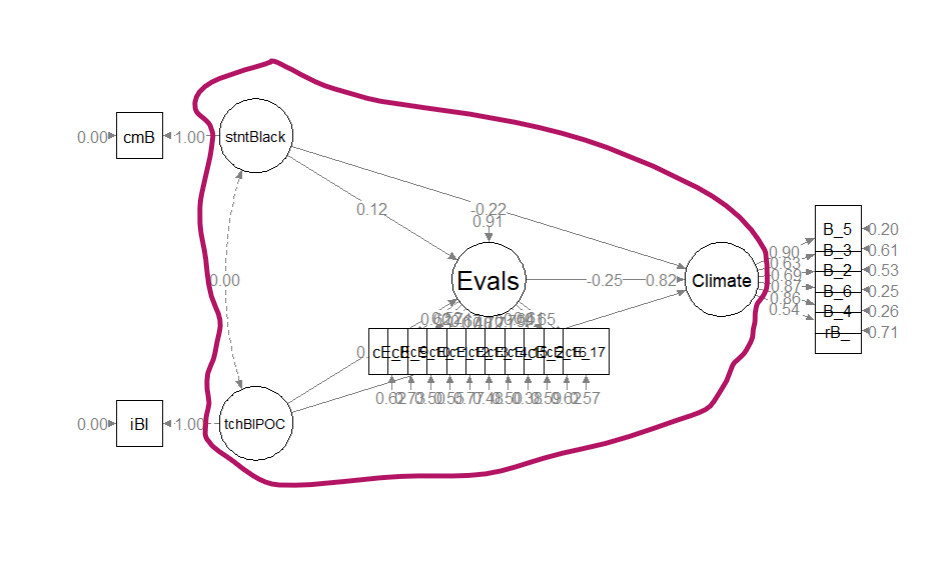
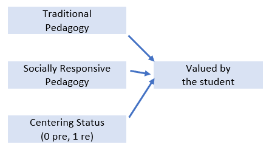

Psychometrics courses usually focus on evaluating the psychometric properties of an instrument and outlining the steps/procedures in instrument development. I believe it is also important to understand how to incorporate those psychometrically credible measures in research designs and particularly, SEM. Thus, the purpose of this lecture is to walk through a real dataset from missing data analysis, to analyzing and managing missing data, to assessing the distributional characteristics of the data, to creating a measurement model, and finally recrafting it as a structural mode.
At the outset, please know that this lesson (a) skips a few steps and (b) introduces (entirely too quickly) some steps that will be new to those who are not exposed to structural equation modeling (SEM). While somewhat regrettable, this is intentional. In the program where I have taught, we teach psychometrics before the multivariate class and this is the last lesson in psychometrics. One intent is to provide an advanced cognitive organizer for what is yet to come in the SEM lessons in multivariate modeling. In-so-doing, I’m hoping to show how the entire psychometric process is critical to our final, tested, models.
Navigating this Lesson
There is about 1 hour and 45 minutes of lecture. If you work through the materials with me it would be plan for an additional two hours.
While the majority of R objects and data you will need are created within the R script that sources the chapter, occasionally there are some that cannot be created from within the R framework. Additionally, sometimes links fail. All original materials are provided at the Github site that hosts the book. More detailed guidelines for ways to access all these materials are provided in the OER’s introduction.
Learning Objectives
Focusing on this week’s materials, make sure you can:
- Identify steps in preparing data for structural equation modeling.
- Differentiate a measurement model from a structural model and know which one will have better fit.
- List the general steps in evaluating a hybrid model.
- Specify and interpret the results of a measurement model.
- Specify and interpret the results of a structural model.
Planning for Practice
In each of these lessons I provide suggestions for practice that allow you to select one or more problems that are graded in difficulty The least complex is to import the latest Rate-a-Recent-Course: A ReCentering Psych Stats Exercisedata from Qualtrics and rework the problem as written in the lesson. For an increased challenge, swap out one or more variables/scales. And for a maximal challenge, try something entirely new with data (similated or real) that you have permission to use.
Regardless of your choic(es) please work through the following:
- Structure up your dataframe.
- Analyze and manage missing data.
- Evaluate the assumptions for multivariate analysis.
- Conduct appropriate preliminary analyses.
- Specify and evaluate a measurement model.
- Prepare an APA style results section with table(s) and figure(s).
- Explain it to somebody.
Readings & Resources
In preparing this chapter, I drew heavily from the following resource(s). Other resources are cited (when possible, linked) in the text with complete citations in the reference list.
Kline, R. (2016). Principles and practice of structural equation modeling (Fourth ed., Methodology in the social sciences). New York: The Guilford Press.
- Chapter 4, Data Preparation and Psychometrics Review
- Chapter 10, Specification and Identification of Structural Regression Models
- Chapter 11, Estimation and Local Fit Testing
- Chapter 13, Analysis of CFA Models
Little, T. D., Cunningham, W. A., Shahar, G., & Widaman, K. F. (2002). To parcel or not to parcel: Exploring the question, weighing the merits. Structural Equation Modeling, 9(2), 151–173. https://doi.org/10.1207/S15328007SEM0902_1
Little, T. D., Rhemtulla, M., Gibson, K., & Schoemann, A. M. (2013). Why the items versus parcels controversy needn’t be one. Psychological Methods, 18(3), 285–300. https://doi.org/10.1037/a0033266
Rosseel, Y. (2019). The lavaan tutorial. Belgium: Department of Data Analysis, Ghent University. http://lavaan.ugent.be/tutorial/tutorial.pdf
Packages
The packages used in this lesson are embedded in this code. When the hashtags are removed, the script below will (a) check to see if the following packages are installed on your computer and, if not (b) install them.
# will install the package if not already installed
# if(!require(psych)){install.packages('psych')}
# if(!require(lavaan)){install.packages('lavaan')}
# if(!require(semPlot)){install.packages('semPlot')}
# if(!require(psych)){install.packages('psych')}
# if(!require(semTable)){install.packages('semTable')}
# if(!require(semTools)){install.packages('semTools')}
# if(!require(semptools)){install.packages('semptools')}
Importing and Preparing the Data
This section of the lesson describes how to import data directly from Qualtrics and do some formatting. Because the survey remains open, if you import the data from Qualtrics you will get different results than are in the lesson. If you want to get the same results as me, download the dataset from the GitHub, save it in the same place as your working .rmd file, and skip to “START HERE”. For practice, you might consider downloading the data directly from Qualtrics for updated results.
Three chapters in the Multivariate Modeling volume of ReCentering Psych Stats provide greater detail about the process of importing and preparing data from the Rate-a-Recent-Course: A ReCentering Psych Stats Exercise survey.
We start with an intRavenous import directly from Qualtrics. This is a two-step process.
- Establishing a connection to the Qualtrics account by supplying the base URL and API credentials.
- Be very careful with these, they provide access to everything in your Qualtrics account. This Qualtrics account has only this survey and nothing else.
- If the API token becomes operational, please let me know. Qualtrics security may have a protocol to replace/disable them.
- Naming the survey (via its identification number) and importing the results.
# The hashtagged line of code makes the connection to the
# institution's Qualtrics account and the individual Qualtrics
# account within that institutional brand. Once that connection is
# made, hashtag it out to avoid glitches. If you are changing from
# one account to another you will likely need to restart R.
# qualtRics::qualtrics_api_credentials(api_key =
# 'mUgPMySYkiWpMFkwHale1QE5HNmh5LRUaA8d9PDg', base_url =
# 'spupsych.az1.qualtrics.com', overwrite = TRUE, install = TRUE)
# surveys <- qualtRics::all_surveys() QTRX_df
# <-qualtRics::fetch_survey(surveyID = 'SV_b2cClqAlLGQ6nLU',
# time_zone = NULL, verbose = FALSE, label=TRUE, force_request =
# TRUE, import_id = FALSE) convert=FALSE,
In the next set of code, I quickly prepare the data that I will use for the hybrid SEM. In the next set of script we:
- Delete “previews” (those “tester” surveys taken prior to the official launch).
- Rename a few variables to make them easier to manipulate.
- Most variable naming was completed inside the Qualtrics survey, prior to importing, but some variables were impossible to rename and we did not anticipate all of our needs.
- Create an ID number for each case and moving it to the front of the dataframe.
- Create a df that includes only the variables needed to specify the hybrid model.
# eliminating previews QTRX_df <- dplyr::filter (QTRX_df,
# DistributionChannel != 'preview')
# renaming variables that start with numbers QTRX_df <-
# dplyr::rename(QTRX_df, iRace1 = '1_iRace', iRace2 = '2_iRace',
# iRace3 = '3_iRace', iRace4 = '4_iRace', iRace5 = '5_iRace', iRace6
# = '6_iRace', iRace7 = '7_iRace', iRace8 = '8_iRace', iRace9 =
# '9_iRace', iRace10 = '10_iRace')
# renaming variables about classmates race/ethnicity QTRX_df <-
# dplyr::rename(QTRX_df, cmBiMulti = Race_10, cmBlack = Race_1,
# cmNBPoC = Race_7, cmWhite = Race_8, cmUnsure = Race_2)
library(tidyverse) #opening this package to be able to use pipes
# creating ID variable and moving it to the front QTRX_df <- QTRX_df
# %>% dplyr::mutate(ID = row_number()) QTRX_df <-
# QTRX_df%>%dplyr::select(ID, everything())
# downsizing df to have just variables of interest Model_df <-(select
# (QTRX_df, ID, iRace1, iRace2, iRace3, iRace4, iRace5, iRace6,
# iRace7, iRace8, iRace9, iRace10, cmBiMulti, cmBlack, cmNBPoC,
# cmWhite, cmUnsure, Blst_1:Blst_6, cEval_8, cEval_9, cEval_10,
# cEval_11, cEval_12, cEval_13, cEval_14, cEval_15, cEval_20,
# cEval_16,cEval_17))
The optional script below will let you save the imported data to your computing environment as either a .csv file (think “Excel lite”) or .rds object (preserves any formatting you might do). If you save the .csv file and bring it back in, you will lose any formatting (e.g., ordered factors will be interpreted as character variables).
# write the simulated data as a .csv write.table(Model_df,
# file='Model_df.csv', sep=',', col.names=TRUE, row.names=FALSE)
# bring back the simulated dat from a .csv file Model_df <- read.csv
# ('Model_df.csv', header = TRUE)
An .rds file preserves all formatting to variables prior to the export and re-import. For the purpose of this chapter, you don’t need to do either. That is, you can re-simulate the data each time you work the problem.
START HERE to upload the [data you downloaded from the GitHub](https://github.com/lhbikos/ReC_Psychometrics/blob/main/Model_df211010.rds. This will produce the same results in this lesson
# to save the df as an .rds (think 'R object') file on your computer;
# it should save in the same file as the .rmd file you are working
# with saveRDS(Model_df, 'Model_df.rds') bring back the simulated dat
# from an .rds file
Model_df <- readRDS("Model_df211010.rds") #For this lesson, I saved and imported this set of data; use it if you want the same results as are in the lesson and screencasted lecture
# Model_df <- readRDS('Model_df.rds')
As a multicategorical variable, race/ethnicity frequently takes some thought and manipulation. I would have liked to have evaluated instructor race as the proportion of the instructional staff who is Black. At this time, there is so little variability in the instructional staff variable that we are using proportion of instructional staff who is BIPOC.
Given that classes may be teamtaught (and/or include teaching assistants) in the survey, respondents indicated how many instructional staff taught their class. For each, the respondent indicated the race/ethnicity of the instructor. It was possible to list up to 10 instructors per class. We need to get these 10 responses summarized as one variable representing the proportion of instructional faculty (per respondent/class) who were BIPOC. The code below:
- Transforms each race identification variable into a factor.
- Calculates the proportion of BIPOC instructional faculty for each respondent’s class.
# str(Model_df$iRace1)
Model_df$tRace1 = factor(Model_df$iRace1, levels = c(0, 1, 2, 3, 4), labels = c("Black",
"nBpoc", "BiMulti", "White", "NotNotice"))
Model_df$tRace2 = factor(Model_df$iRace2, levels = c(0, 1, 2, 3, 4), labels = c("Black",
"nBpoc", "BiMulti", "White", "NotNotice"))
Model_df$tRace3 = factor(Model_df$iRace3, levels = c(0, 1, 2, 3, 4), labels = c("Black",
"nBpoc", "BiMulti", "White", "NotNotice"))
Model_df$tRace4 = factor(Model_df$iRace4, levels = c(0, 1, 2, 3, 4), labels = c("Black",
"nBpoc", "BiMulti", "White", "NotNotice"))
Model_df$tRace5 = factor(Model_df$iRace5, levels = c(0, 1, 2, 3, 4), labels = c("Black",
"nBpoc", "BiMulti", "White", "NotNotice"))
Model_df$tRace6 = factor(Model_df$iRace6, levels = c(0, 1, 2, 3, 4), labels = c("Black",
"nBpoc", "BiMulti", "White", "NotNotice"))
Model_df$tRace7 = factor(Model_df$iRace7, levels = c(0, 1, 2, 3, 4), labels = c("Black",
"nBpoc", "BiMulti", "White", "NotNotice"))
Model_df$tRace8 = factor(Model_df$iRace8, levels = c(0, 1, 2, 3, 4), labels = c("Black",
"nBpoc", "BiMulti", "White", "NotNotice"))
Model_df$tRace9 = factor(Model_df$iRace9, levels = c(0, 1, 2, 3, 4), labels = c("Black",
"nBpoc", "BiMulti", "White", "NotNotice"))
Model_df$tRace10 = factor(Model_df$iRace10, levels = c(0, 1, 2, 3, 4),
labels = c("Black", "nBpoc", "BiMulti", "White", "NotNotice"))
# checking to see that they are factors glimpse(Model_df)
# counting non-White instructional staff by creating the variable
# 'count.BIPOC' by summing across tRace1 thru tRace10 and assigning a
# count of '1' each time the factor value was Black, nBpoc, or
# BiMulti
Model_df$count.BIPOC <- apply(Model_df[c("tRace1", "tRace2", "tRace3",
"tRace4", "tRace5", "tRace6", "tRace7", "tRace8", "tRace9", "tRace10")],
1, function(x) sum(x %in% c("Black", "nBpoc", "BiMulti")))
# created a variable that counted the number of non-missing values
# across the tRace1 thru tRace10 vars
Model_df$count.nMiss <- apply(Model_df[c("tRace1", "tRace2", "tRace3",
"tRace4", "tRace5", "tRace6", "tRace7", "tRace8", "tRace9", "tRace10")],
1, function(x) sum(!is.na(x)))
# calculate proportion of BIPOC instructional faculty for each case
Model_df$iBIPOC_pr = Model_df$count.BIPOC/Model_df$count.nMiss
The scale assessing perceptions of campus climate for Black students had six items. One was worded in the opposite direction of the rest, therefore we must reverse-score it. Following the reverse-coding, I once again trimmed the dataframe so that it includes only the variables we need for the next step.
library(tidyverse)
Model_df <- Model_df %>%
dplyr::mutate(rBlst_1 = 8 - Blst_1) #if you had multiple items, you could add a pipe (%>%) at the end of the line and add more until the last one
# selecting the variables we want
Model_df <- dplyr::select(Model_df, ID, iBIPOC_pr, cmBlack, rBlst_1, Blst_2:Blst_6,
cEval_8:cEval_17)
Analyzing and Managing Missingness
The series of lessons on data preparation in the Multivariate Modeling volume provide a more detailed review of analyzing and managing missing data. Much of the script below is copied from those lessons and my review and explanation in this lesson is significantly shorter.
Structural equation models lend themselves to managing missing data with Parent’s (2013) available information analysis (AIA) approach. My approach is to:
- Create a dataframe that includes only the variables that will be used in the analysis.
- Delete all cases with greater than 20% missingness.
- If scale scores (or parcels) are used, calculate them if ~80% of the data for the calculation is present.
- Use the full information maximum likelihood (FIML) estimation procedure in lavaan; this allows item-level missingness.
cases1 <- nrow(Model_df) #I produced this object for the sole purpose of feeding the number of cases into the inline text, below
cases1
[1] 70
library(tidyverse)
# Create a variable (n_miss) that counts the number missing
Model_df$n_miss <- Model_df %>%
dplyr::select(iBIPOC_pr:cEval_17) %>%
is.na %>%
rowSums
# Create a proportion missing by dividing n_miss by the total number
# of variables (21) Sort in order of descending frequency to get a
# sense of the missingness
Model_df <- Model_df %>%
dplyr::mutate(prop_miss = (n_miss/21) * 100) %>%
arrange(desc(n_miss))
PrMiss1 <- psych::describe(Model_df$prop_miss)
PrMiss1
vars n mean sd median trimmed mad min max range skew kurtosis se
X1 1 70 27.48 40.41 0 23.04 0 0 90.48 90.48 0.87 -1.2 4.83
MissMin1 <- formattable::digits(PrMiss1$min, 0) #this object is displayed below and I use input from it for the inline text used in the write-up
MissMax1 <- formattable::digits(PrMiss1$max, 0)
MissMin1
[1] 0
[1] 90
CellsMissing1 <- formattable::percent(mean(is.na(Model_df))) #percent missing across df
RowsMissing1 <- formattable::percent(mean(complete.cases(Model_df))) #percent of rows with nonmissing data
CellsMissing1
[1] 26.23%
[1] 60.00%
Our initial inspection of the data indicated that 70 attempted the survey. The proportion of missingness in the responses ranged from 0 to 90. Across the dataframe there was 26% of missingness across the cells. Approximately 60% of the cases had nonmissing data.
Let’s conduct an analysis of missingness with the mice::md.pattern() function.
missingness <- mice::md.pattern(Model_df, plot = TRUE, rotate.names = TRUE)
ID n_miss prop_miss cmBlack cEval_8 cEval_12 cEval_13 cEval_14 cEval_16
42 1 1 1 1 1 1 1 1 1
1 1 1 1 1 1 1 1 1 1
1 1 1 1 1 1 1 1 1 1
1 1 1 1 1 1 1 1 1 1
1 1 1 1 1 1 1 1 1 1
1 1 1 1 1 1 1 1 1 1
1 1 1 1 1 1 1 1 1 1
2 1 1 1 1 1 1 1 1 1
1 1 1 1 0 0 0 0 0 0
19 1 1 1 0 0 0 0 0 0
0 0 0 20 20 20 20 20 20
iBIPOC_pr cEval_9 cEval_10 cEval_15 cEval_20 cEval_17 Blst_2 Blst_3 Blst_5
42 1 1 1 1 1 1 1 1 1
1 1 1 1 1 1 1 1 1 1
1 1 1 1 1 1 1 0 1 1
1 1 1 1 1 1 1 0 0 0
1 1 1 1 1 1 0 1 1 1
1 1 1 1 0 0 1 1 1 0
1 1 0 0 1 1 1 1 0 1
2 0 1 1 1 1 1 1 1 1
1 1 0 0 0 0 0 0 0 0
19 0 0 0 0 0 0 0 0 0
21 21 21 21 21 21 22 22 22
Blst_6 cEval_11 Blst_4 rBlst_1
42 1 1 1 1 0
1 1 1 1 0 1
1 0 1 0 0 4
1 0 1 0 0 6
1 1 1 1 1 1
1 1 0 1 0 5
1 1 0 0 0 6
2 1 1 1 1 1
1 0 0 0 0 18
19 0 0 0 0 19
22 22 23 25 404
We need to decide what is our retention threshold. Twenty percent seems to be a general rule of thumb. Let’s delete all cases with missingness at 20% or greater.
Model_df <- filter(Model_df, prop_miss <= 20) #update df to have only those with at least 20% of complete data (this is an arbitrary decision)
Model_df <- dplyr::select(Model_df, iBIPOC_pr:cEval_17) #the variable selection just lops off the proportion missing
CasesIncluded <- nrow(Model_df)
CasesIncluded #this object is displayed below and I use input from it for the inline text used in the write-up
[1] 47
We should check the missingness characteristics again.
CellsMissing2 <- formattable::percent(mean(is.na(Model_df))) #percent missing across df
RowsMissing2 <- formattable::percent(mean(complete.cases(Model_df))) #percent of rows with nonmissing data
CellsMissing2
[1] 0.90%
[1] 89.36%
missingness2 <- mice::md.pattern(Model_df, plot = TRUE, rotate.names = TRUE)
cmBlack Blst_3 Blst_5 cEval_8 cEval_9 cEval_10 cEval_11 cEval_12 cEval_13
42 1 1 1 1 1 1 1 1 1
1 1 1 1 1 1 1 1 1 1
2 1 1 1 1 1 1 1 1 1
1 1 1 1 1 1 1 1 1 1
1 1 1 1 1 1 1 1 1 1
0 0 0 0 0 0 0 0 0
cEval_14 cEval_15 cEval_20 cEval_16 Blst_2 Blst_4 Blst_6 cEval_17 iBIPOC_pr
42 1 1 1 1 1 1 1 1 1
1 1 1 1 1 1 1 1 1 1
2 1 1 1 1 1 1 1 1 0
1 1 1 1 1 1 1 1 0 1
1 1 1 1 1 0 0 0 1 1
0 0 0 0 1 1 1 1 2
rBlst_1
42 1 0
1 0 1
2 1 1
1 1 1
1 0 4
2 8
Write up of results so far:
Our initial inspection of the data indicated that 70 attempted the survey. The proportion of missingness in the responses ranged from 0 to 90. Across the dataframe there was 26% of missingness across the cells. Approximately 60% of the cases had nonmissing data. The predominant pattern of missingness included individuals opening the survey without completing any of the items. Beyond that, our inspection of a missingness map indicated a haphazard pattern of missingness (Enders, 2010).
We decided to delete all cases with greater than 20% missinness. We reinspected the missingness of the dataset with 47 cases. Across the dataframe there was less than 1% of missingness across the cells. Approximately 89% of the cases had nonmissing data.
Assessing the Distributional Characteristics of the Data
psych::describe(Model_df)
vars n mean sd median trimmed mad min max range skew kurtosis
iBIPOC_pr 1 45 0.33 0.40 0.25 0.30 0.37 0 1 1 0.76 -1.06
cmBlack 2 47 6.66 7.64 5.00 5.46 7.41 0 29 29 1.29 0.85
rBlst_1 3 45 3.42 1.60 3.00 3.35 1.48 1 7 6 0.48 -0.60
Blst_2 4 46 2.67 1.59 2.00 2.58 1.48 1 6 5 0.30 -1.42
Blst_3 5 47 2.11 1.29 2.00 1.95 1.48 1 6 5 1.06 0.25
Blst_4 6 46 2.35 1.25 2.00 2.24 1.48 1 5 4 0.61 -0.80
Blst_5 7 47 2.00 1.20 2.00 1.87 1.48 1 5 4 0.89 -0.58
Blst_6 8 46 2.26 1.34 2.00 2.08 1.48 1 6 5 0.99 0.04
cEval_8 9 47 4.30 0.83 4.00 4.44 1.48 1 5 4 -1.69 3.98
cEval_9 10 47 3.81 1.06 4.00 3.87 1.48 2 5 3 -0.49 -1.00
cEval_10 11 47 4.00 0.98 4.00 4.13 1.48 1 5 4 -0.96 0.53
cEval_11 12 47 3.40 1.15 3.00 3.41 1.48 1 5 4 0.02 -1.21
cEval_12 13 47 3.85 1.27 4.00 3.97 1.48 1 5 4 -0.73 -0.83
cEval_13 14 47 3.83 1.05 4.00 3.97 0.00 1 5 4 -1.21 1.18
cEval_14 15 47 3.72 1.36 4.00 3.87 1.48 1 5 4 -0.97 -0.30
cEval_15 16 47 3.26 1.19 3.00 3.31 1.48 1 5 4 -0.41 -0.78
cEval_20 17 47 3.55 1.14 4.00 3.67 1.48 1 5 4 -0.73 -0.10
cEval_16 18 47 3.13 1.30 3.00 3.15 1.48 1 5 4 -0.23 -1.11
cEval_17 19 46 2.67 1.43 2.00 2.61 1.48 1 5 4 0.35 -1.31
se
iBIPOC_pr 0.06
cmBlack 1.11
rBlst_1 0.24
Blst_2 0.23
Blst_3 0.19
Blst_4 0.18
Blst_5 0.17
Blst_6 0.20
cEval_8 0.12
cEval_9 0.15
cEval_10 0.14
cEval_11 0.17
cEval_12 0.18
cEval_13 0.15
cEval_14 0.20
cEval_15 0.17
cEval_20 0.17
cEval_16 0.19
cEval_17 0.21
Regarding the distributional characteristics of the data, skew and kurtosis values of the variables fell below the values of 3 (skew) and 8 to 20 (kurtosis) that Kline suggests are concerning (2016).
Model_df$Mahal <- psych::outlier(Model_df)
library(dplyr)
# str(item_scores_df$Mahal)
Model_df$MOutlier <- if_else(Model_df$Mahal > (median(Model_df$Mahal) +
(3 * sd(Model_df$Mahal))), TRUE, FALSE)
OutlierCount <- Model_df %>%
count(MOutlier)
OutlierCount
# A tibble: 1 × 2
MOutlier n
<lgl> <int>
1 FALSE 47
NumOutliers <- nrow(Model_df) - OutlierCount #calculating how many outliers
NumOutliers #this object is used for the inline text for the reesults
MOutlier n
1 47 0
MOutlier n
1 47 0
head(Model_df) #shows us the first 6 rows of the data so we can see the new variables (Mahal, MOutlier)
# A tibble: 6 × 21
iBIPOC_pr cmBlack rBlst_1 Blst_2 Blst_3 Blst_4 Blst_5 Blst_6 cEval_8 cEval_9
<dbl> <dbl> <dbl> <dbl> <dbl> <dbl> <dbl> <dbl> <dbl> <dbl>
1 1 0 NA NA 2 NA 2 NA 5 4
2 0 5 2 6 2 2 4 1 5 5
3 NaN 5 4 5 4 5 3 4 4 4
4 NaN 14 3 4 1 3 1 2 4 3
5 0.25 0 NA 1 1 1 1 1 4 5
6 0.333 0 3 3 5 2 2 2 5 5
# ℹ 11 more variables: cEval_10 <dbl>, cEval_11 <dbl>, cEval_12 <dbl>,
# cEval_13 <dbl>, cEval_14 <dbl>, cEval_15 <dbl>, cEval_20 <dbl>,
# cEval_16 <dbl>, cEval_17 <dbl>, Mahal <dbl>, MOutlier <lgl>
We evaluated multivariate normality with the Mahalanobis distance test. Specifically, we used the outlier() function in the psych package and included all continuous variables in the calculation. Our visual inspection of the Q-Q plot suggested that the plotted line strayed from the straight line as the quantiles increased. Additionally, we appended the Mahalanobis distance scores as a variable to the data. Analyzing this variable, we found that no exceed three standard deviations beyond the median. Thus, with no outliers, we assumed multivariate normality and proceeded with the data analysis
Preliminary Analyses
Internal Consistency Coefficients
Most research projects start with some preliminary statistics. Even though we will be using item-level data in our hybrid model, for any instruments that are scales, we typically compute internal consistency coefficients and include these values in the last sentence of in the description of the respective measure. In this example we used two scales: Perceptions of the Campus Climate for Black Students and the Course Evaluation items that evaluated the degree to which the pedagogy was socially and culturally responsive. A more thorough description of internal consistency coefficients are found in the reliability chapter of this volume.
My process for calculating alpha coefficients is to first create a subset of item-level data that is consistently scaled in the same direction. That is, reverse score any items before creating the subset of data.
ClimateItems <- dplyr::select(Model_df, rBlst_1, Blst_2, Blst_3, Blst_4,
Blst_5, Blst_6)
CEvalItems <- dplyr::select(Model_df, cEval_8, cEval_9, cEval_10, cEval_11,
cEval_12, cEval_13, cEval_14, cEval_15, cEval_16, cEval_17, cEval_20)
Next, in separate analyses, we apply the psych::alpha() function to the scale items.
ClimateAlpha <- psych::alpha(ClimateItems)
ClimateAlpha
Reliability analysis
Call: psych::alpha(x = ClimateItems)
raw_alpha std.alpha G6(smc) average_r S/N ase mean sd median_r
0.87 0.88 0.88 0.55 7.4 0.029 2.5 1.1 0.53
95% confidence boundaries
lower alpha upper
Feldt 0.81 0.87 0.92
Duhachek 0.82 0.87 0.93
Reliability if an item is dropped:
raw_alpha std.alpha G6(smc) average_r S/N alpha se var.r med.r
rBlst_1 0.88 0.89 0.88 0.62 8.0 0.027 0.016 0.60
Blst_2 0.86 0.87 0.86 0.56 6.5 0.034 0.026 0.53
Blst_3 0.87 0.88 0.87 0.59 7.3 0.031 0.020 0.57
Blst_4 0.83 0.84 0.83 0.52 5.4 0.039 0.019 0.50
Blst_5 0.83 0.83 0.82 0.50 5.1 0.040 0.018 0.47
Blst_6 0.83 0.84 0.83 0.52 5.3 0.039 0.019 0.48
Item statistics
n raw.r std.r r.cor r.drop mean sd
rBlst_1 45 0.68 0.65 0.53 0.51 3.4 1.6
Blst_2 46 0.78 0.76 0.70 0.65 2.7 1.6
Blst_3 47 0.69 0.70 0.61 0.57 2.1 1.3
Blst_4 46 0.86 0.86 0.85 0.79 2.3 1.3
Blst_5 47 0.88 0.89 0.89 0.84 2.0 1.2
Blst_6 46 0.86 0.87 0.86 0.79 2.3 1.3
Non missing response frequency for each item
1 2 3 4 5 6 7 miss
rBlst_1 0.09 0.24 0.22 0.22 0.09 0.09 0.04 0.04
Blst_2 0.37 0.15 0.09 0.24 0.13 0.02 0.00 0.02
Blst_3 0.43 0.30 0.09 0.15 0.02 0.02 0.00 0.00
Blst_4 0.30 0.33 0.15 0.15 0.07 0.00 0.00 0.02
Blst_5 0.47 0.28 0.06 0.17 0.02 0.00 0.00 0.00
Blst_6 0.35 0.35 0.11 0.11 0.07 0.02 0.00 0.02
We learn that the Cronbach’s alpha coefficient for the scale assessing perceptions of campus climate for students who are Black is 0.881. This exceeds the recommended thresshold of .80. I would simply add a sentence similar to the following to the end of my description of the scale in the Method/Measures section: In our study the estimated internal consistency reliability of the total scale score assessing campus climate was 0.881.
Let’s repeat the process for the items assessing the degree to which the pedagogy was socially and culturally responsive.
CEvalAlpha <- psych::alpha(CEvalItems)
CEvalAlpha
Reliability analysis
Call: psych::alpha(x = CEvalItems)
raw_alpha std.alpha G6(smc) average_r S/N ase mean sd median_r
0.88 0.89 0.92 0.42 7.8 0.025 3.6 0.8 0.41
95% confidence boundaries
lower alpha upper
Feldt 0.83 0.88 0.93
Duhachek 0.83 0.88 0.93
Reliability if an item is dropped:
raw_alpha std.alpha G6(smc) average_r S/N alpha se var.r med.r
cEval_8 0.87 0.88 0.90 0.42 7.2 0.027 0.017 0.42
cEval_9 0.88 0.88 0.91 0.43 7.6 0.026 0.018 0.43
cEval_10 0.87 0.87 0.90 0.41 6.8 0.028 0.019 0.40
cEval_11 0.87 0.87 0.91 0.41 6.9 0.028 0.022 0.39
cEval_12 0.88 0.89 0.92 0.44 7.8 0.025 0.018 0.43
cEval_13 0.87 0.87 0.90 0.41 6.8 0.028 0.019 0.40
cEval_14 0.87 0.87 0.90 0.41 6.9 0.029 0.019 0.41
cEval_15 0.86 0.87 0.90 0.40 6.6 0.030 0.017 0.39
cEval_16 0.87 0.88 0.91 0.42 7.2 0.028 0.021 0.40
cEval_17 0.87 0.88 0.91 0.42 7.2 0.027 0.017 0.41
cEval_20 0.87 0.88 0.90 0.42 7.2 0.028 0.017 0.41
Item statistics
n raw.r std.r r.cor r.drop mean sd
cEval_8 47 0.63 0.67 0.65 0.57 4.3 0.83
cEval_9 47 0.57 0.60 0.56 0.48 3.8 1.06
cEval_10 47 0.72 0.75 0.73 0.66 4.0 0.98
cEval_11 47 0.72 0.72 0.68 0.64 3.4 1.15
cEval_12 47 0.55 0.56 0.49 0.44 3.9 1.27
cEval_13 47 0.72 0.74 0.73 0.66 3.8 1.05
cEval_14 47 0.74 0.72 0.70 0.66 3.7 1.36
cEval_15 47 0.80 0.79 0.79 0.74 3.3 1.19
cEval_16 47 0.68 0.66 0.61 0.59 3.1 1.30
cEval_17 46 0.70 0.66 0.63 0.59 2.7 1.43
cEval_20 47 0.68 0.66 0.64 0.60 3.6 1.14
Non missing response frequency for each item
1 2 3 4 5 miss
cEval_8 0.02 0.02 0.04 0.47 0.45 0.00
cEval_9 0.00 0.17 0.15 0.38 0.30 0.00
cEval_10 0.02 0.06 0.15 0.43 0.34 0.00
cEval_11 0.02 0.23 0.30 0.21 0.23 0.00
cEval_12 0.04 0.17 0.11 0.26 0.43 0.00
cEval_13 0.06 0.04 0.13 0.53 0.23 0.00
cEval_14 0.15 0.02 0.13 0.36 0.34 0.00
cEval_15 0.11 0.15 0.26 0.36 0.13 0.00
cEval_16 0.15 0.17 0.23 0.30 0.15 0.00
cEval_17 0.26 0.28 0.13 0.17 0.15 0.02
cEval_20 0.09 0.06 0.26 0.40 0.19 0.00
The alpha coefficient for the course evaluation items assessing a socially and culturally responsive pedagogy was 0.887. I would add this sentence to the description of this measure.
Means, SDs, r-matrix
Means, standard deviations, and a correlation matrix are also commonly reported. Because two of our constructs are scales, we will need to calculate their means for cases that have met the minimum thresshold for nonmissingness.
# create lists of the items
ClimateVars <- c("rBlst_1", "Blst_2", "Blst_3", "Blst_4", "Blst_5", "Blst_6")
CEvalVars <- c("cEval_8", "cEval_9", "cEval_10", "cEval_11", "cEval_12",
"cEval_13", "cEval_14", "cEval_15", "cEval_16", "cEval_17", "cEval_20")
# calculate means for when a specified proportion of items are
# non-missing
Model_df$ClimateM <- sjstats::mean_n(Model_df[, ClimateVars], 0.8) #will create the mean for each individual if 80% of variables are present (this means there must be at least 5 of 6)
Model_df$CEvalM <- sjstats::mean_n(Model_df[, CEvalVars], 0.8) #will create the mean for each individual if 80% of variables are present (this means there must be at least 9 of 11)
The apaTables::cor.table function creates the standard table that will include the means, standard deviations, and correlation matrix.
apaTables::apa.cor.table(Model_df[c("ClimateM", "CEvalM", "iBIPOC_pr",
"cmBlack")], landscape = TRUE, table.number = 1, filename = "Table1_Prelim.doc")
Table 1
Means, standard deviations, and correlations with confidence intervals
Variable M SD 1 2 3
1. ClimateM 2.46 1.09
2. CEvalM 3.60 0.80 -.30*
[-.55, -.02]
3. iBIPOC_pr 0.33 0.40 -.26 .24
[-.52, .04] [-.06, .50]
4. cmBlack 6.66 7.64 -.19 .08 -.07
[-.45, .11] [-.21, .36] [-.36, .23]
Note. M and SD are used to represent mean and standard deviation, respectively.
Values in square brackets indicate the 95% confidence interval.
The confidence interval is a plausible range of population correlations
that could have caused the sample correlation (Cumming, 2014).
* indicates p < .05. ** indicates p < .01.
Summary of Data Preparation
We began by creating a dataset that included only the variables of interest. Our initial inspection of the data indicated that 70 attempted the survey. The proportion of missingness in the responses ranged from 0 to 90. Across the dataframe there was 26% of missingness across the cells. Approximately 60% of the cases had nonmissing data. The predominant pattern of missingness included individuals opening the survey without completing any of the items. Beyond that, our inspection of a missingness map indicated a haphazard pattern of missingness (Enders, 2010).
Using Parent’s available item analysis [AIA; -Parent (2013)] as a guide, we deleted all cases where there was greater than 20% of data missing. We reinspected the missingness of the dataset with 47 cases. Across the dataframe there was less than 1% of missingness across the cells. Approximately 89% of the cases had nonmissing data.
Regarding the distributional characteristics of the data, skew and kurtosis values of the variables fell below the values of 3 (skew) and 8 to 20 (kurtosis) that Kline suggests are concerning (2016). We evaluated multivariate normality with the Mahalanobis distance test. Specifically, we used the outlier() function in the psych package and included all continuous variables in the calculation. Our visual inspection of the Q-Q plot suggested that the plotted line strayed from the straight line as the quantiles increased. Additionally, we appended the Mahalanobis distance scores as a variable to the data. Analyzing this variable, we found that no exceed three standard deviations beyond the median. Thus, with no outliers, we assumed multivariate normality and proceeded with the data analysis. Means, standard deviations, and a correlation matrix are found in Table 1.
The Measurement Model: Specification and Evaluation
Structural regression (e.g., structural equation, hybrid) models include both measurement and structural portions. The measurement model examines the relationship between latent variables and their measures.
- Testing the measurement model means saturating it, such that \(df = 0\) and it is just-identified.
- Essentially, the measurement model is a correlated factors model. However, rather than having subscales of a larger scale, these are all the LVs involved in your model.
- Testing the measurement model points out any misfit in the measurement model (that you need to fix). Heywood cases(usually a negative error variance, which is an impossible solution) are an example of a problem that would need to be addressed before fixing.
The structural model evaluates the hypothesized relations between the latent variables.
- The structural model is typically more parsimonious (i.e., not saturated) than the measurement model and is characterized by directional paths (not covariances) between some (not all) of the variables.
The specification of our measurement model resembles the first-order, correlated traits specifications in prior lessons. What differs is that we include all latent variables and their specifications. Below, there are no surprises about the Climate and CourseEval latent variables, because these are traditional scales and they have at least three items/indicators. In contrast, latent variables with one and two indicators requires special treatment.
For two-indicator latent variables, Little et al. (2002) recommended placing an equality constraint on the two loadings associated with the construct because this would locate the construct at the true intersection of the two selected indicators. Procedurally this is fairly straightforward. If we wanted to create a latent variable from the proportions of (a) instructional staff and (b) classmates who are Black we would simply assign labels to the two indicators:
#PrBlack =~ v1*iBIPOC_pr + v1*cmBlack
For single indicator latent variables, Little et al. (2002) wrote, “a single-indicator latent variable is essentially equivalent to a manifest variable. In this case, the error of measurement is either fixed at zero or fixed at a non-zero estimate of unreliability; additionally a second corresponding parameter would also need to be fixed because of issue of identification.”
Our proportion of instructional staff who are BIPOC and estimated proportion of classmates who are Black were estimated with one item each. In order to include single items as latent variables, we set the observed variable to be 0.00. In essence, this says that the latent variable will account for all of the variance in the observed variable. Note that for each of the single-item variables, there are two lines of code. The first, defines the LV from the item; the second specifies the error variance of the single observed variable to be 0.00.
msmt <- "
#latent variable definitions for the factors with 3 or more indicators
Climate =~ rBlst_1 + Blst_4 + Blst_6 + Blst_2 + Blst_3 + Blst_5
CourseEval =~ cEval_8 + cEval_9 + cEval_10 + cEval_11 + cEval_12 + cEval_13 + cEval_14 + cEval_15 + cEval_20 + cEval_16 + cEval_17
#latent variable definitions for the factors with 1 indicator; we set variance of the observed variable to be 0.00; this says that the LV will account for all of the variance in the observed variable
tBIPOC =~ iBIPOC_pr #for the factor \"t\" is teacher; for variable \"i\" is instructor
sBlack =~ cmBlack #for factor \"s\" is student; for variable \"cm\" is classmates
iBIPOC_pr ~~ 0*iBIPOC_pr #this specifies the error variance of the single observed variable to be 0.00
cmBlack ~~ 0*cmBlack
"
Managing missing data with FIML
If the data contain missing values, the default behavior in lavaan is listwise deletion. If we can presume that the missing mechanism is MCAR or MAR (e.g., there is no systematic missingness), we can specify a full information maximum likelihood (FIML) estimation procedure with the argument missing = “ml” (or its alias missing = “fiml”). Recall that we retained cases if they had 20% or less missing. Usin the “fiml” option is part of the AIA approach (Parent, 2013).
msmt_fit <- lavaan::cfa(msmt, data = Model_df, missing = "fiml", check.gradient = FALSE)
# msmt_fit <- lavaan::cfa(msmt, data = Model_df, missing = 'fiml',
# estimator = 'ML', bounds = 'wide')
m1fitsum <- lavaan::summary(msmt_fit, fit.measures = TRUE, standardized = TRUE,
rsquare = TRUE)
# missing = 'fiml',
m1fitsum
lavaan 0.6.17 ended normally after 80 iterations
Estimator ML
Optimization method NLMINB
Number of model parameters 61
Number of observations 47
Number of missing patterns 5
Model Test User Model:
Test statistic 239.689
Degrees of freedom 148
P-value (Chi-square) 0.000
Model Test Baseline Model:
Test statistic 590.701
Degrees of freedom 171
P-value 0.000
User Model versus Baseline Model:
Comparative Fit Index (CFI) 0.782
Tucker-Lewis Index (TLI) 0.748
Robust Comparative Fit Index (CFI) 0.774
Robust Tucker-Lewis Index (TLI) 0.739
Loglikelihood and Information Criteria:
Loglikelihood user model (H0) -1282.408
Loglikelihood unrestricted model (H1) -1162.563
Akaike (AIC) 2686.815
Bayesian (BIC) 2799.674
Sample-size adjusted Bayesian (SABIC) 2608.355
Root Mean Square Error of Approximation:
RMSEA 0.115
90 Percent confidence interval - lower 0.087
90 Percent confidence interval - upper 0.141
P-value H_0: RMSEA <= 0.050 0.000
P-value H_0: RMSEA >= 0.080 0.980
Robust RMSEA 0.118
90 Percent confidence interval - lower 0.090
90 Percent confidence interval - upper 0.144
P-value H_0: Robust RMSEA <= 0.050 0.000
P-value H_0: Robust RMSEA >= 0.080 0.985
Standardized Root Mean Square Residual:
SRMR 0.100
Parameter Estimates:
Standard errors Standard
Information Observed
Observed information based on Hessian
Latent Variables:
Estimate Std.Err z-value P(>|z|) Std.lv Std.all
Climate =~
rBlst_1 1.000 0.851 0.538
Blst_4 1.242 0.322 3.856 0.000 1.057 0.860
Blst_6 1.343 0.347 3.866 0.000 1.142 0.867
Blst_2 1.267 0.368 3.441 0.001 1.078 0.687
Blst_3 0.935 0.289 3.232 0.001 0.796 0.624
Blst_5 1.247 0.319 3.909 0.000 1.061 0.895
CourseEval =~
cEval_8 1.000 0.508 0.617
cEval_9 1.067 0.338 3.153 0.002 0.542 0.519
cEval_10 1.352 0.331 4.087 0.000 0.687 0.710
cEval_11 1.503 0.404 3.719 0.000 0.763 0.668
cEval_12 1.184 0.409 2.895 0.004 0.601 0.479
cEval_13 1.475 0.361 4.089 0.000 0.749 0.722
cEval_14 1.870 0.505 3.701 0.000 0.949 0.704
cEval_15 1.824 0.460 3.961 0.000 0.926 0.788
cEval_20 1.413 0.428 3.301 0.001 0.717 0.637
cEval_16 1.549 0.457 3.391 0.001 0.786 0.613
cEval_17 1.835 0.539 3.403 0.001 0.932 0.654
tBIPOC =~
iBIPOC_pr 1.000 0.396 1.000
sBlack =~
cmBlack 1.000 7.560 1.000
Covariances:
Estimate Std.Err z-value P(>|z|) Std.lv Std.all
Climate ~~
CourseEval -0.138 0.086 -1.604 0.109 -0.319 -0.319
tBIPOC -0.075 0.057 -1.320 0.187 -0.224 -0.224
sBlack -1.519 1.067 -1.423 0.155 -0.236 -0.236
CourseEval ~~
tBIPOC 0.054 0.034 1.588 0.112 0.267 0.267
sBlack 0.382 0.605 0.631 0.528 0.099 0.099
tBIPOC ~~
sBlack -0.201 0.442 -0.455 0.649 -0.067 -0.067
Intercepts:
Estimate Std.Err z-value P(>|z|) Std.lv Std.all
.rBlst_1 3.402 0.234 14.507 0.000 3.402 2.151
.Blst_4 2.346 0.180 13.030 0.000 2.346 1.909
.Blst_6 2.259 0.193 11.712 0.000 2.259 1.715
.Blst_2 2.672 0.230 11.605 0.000 2.672 1.704
.Blst_3 2.106 0.186 11.321 0.000 2.106 1.651
.Blst_5 2.000 0.173 11.571 0.000 2.000 1.688
.cEval_8 4.298 0.120 35.804 0.000 4.298 5.223
.cEval_9 3.809 0.152 24.997 0.000 3.809 3.646
.cEval_10 4.000 0.141 28.342 0.000 4.000 4.134
.cEval_11 3.404 0.167 20.433 0.000 3.404 2.980
.cEval_12 3.851 0.183 21.047 0.000 3.851 3.070
.cEval_13 3.830 0.151 25.295 0.000 3.830 3.690
.cEval_14 3.723 0.197 18.936 0.000 3.723 2.762
.cEval_15 3.255 0.171 18.987 0.000 3.255 2.769
.cEval_20 3.553 0.164 21.629 0.000 3.553 3.155
.cEval_16 3.128 0.187 16.727 0.000 3.128 2.440
.cEval_17 2.704 0.209 12.923 0.000 2.704 1.898
.iBIPOC_pr 0.330 0.059 5.585 0.000 0.330 0.831
.cmBlack 6.660 1.103 6.039 0.000 6.660 0.881
Variances:
Estimate Std.Err z-value P(>|z|) Std.lv Std.all
.iBIPOC_pr 0.000 0.000 0.000
.cmBlack 0.000 0.000 0.000
.rBlst_1 1.776 0.388 4.579 0.000 1.776 0.710
.Blst_4 0.394 0.111 3.544 0.000 0.394 0.261
.Blst_6 0.430 0.126 3.425 0.001 0.430 0.248
.Blst_2 1.298 0.295 4.393 0.000 1.298 0.528
.Blst_3 0.994 0.217 4.577 0.000 0.994 0.611
.Blst_5 0.279 0.094 2.986 0.003 0.279 0.199
.cEval_8 0.419 0.098 4.295 0.000 0.419 0.619
.cEval_9 0.797 0.176 4.542 0.000 0.797 0.731
.cEval_10 0.465 0.119 3.920 0.000 0.465 0.496
.cEval_11 0.723 0.165 4.374 0.000 0.723 0.554
.cEval_12 1.212 0.260 4.666 0.000 1.212 0.770
.cEval_13 0.516 0.127 4.062 0.000 0.516 0.479
.cEval_14 0.916 0.221 4.139 0.000 0.916 0.504
.cEval_15 0.524 0.145 3.608 0.000 0.524 0.379
.cEval_20 0.754 0.178 4.229 0.000 0.754 0.594
.cEval_16 1.025 0.229 4.483 0.000 1.025 0.624
.cEval_17 1.161 0.275 4.230 0.000 1.161 0.572
Climate 0.724 0.381 1.901 0.057 1.000 1.000
CourseEval 0.258 0.119 2.172 0.030 1.000 1.000
tBIPOC 0.157 0.033 4.757 0.000 1.000 1.000
sBlack 57.161 11.791 4.848 0.000 1.000 1.000
R-Square:
Estimate
iBIPOC_pr 1.000
cmBlack 1.000
rBlst_1 0.290
Blst_4 0.739
Blst_6 0.752
Blst_2 0.472
Blst_3 0.389
Blst_5 0.801
cEval_8 0.381
cEval_9 0.269
cEval_10 0.504
cEval_11 0.446
cEval_12 0.230
cEval_13 0.521
cEval_14 0.496
cEval_15 0.621
cEval_20 0.406
cEval_16 0.376
cEval_17 0.428
Interpreting the Output
| Factor loadings significant, strong, proper valence |
|
Yes |
| Non-significant chi-square |
\(\chi ^{2}(148) = 239.689, *p* < 0.001\) |
No |
| \(CFI\geq .95\) |
CFI = 0.782 |
No |
| \(RMSEA\leq .05\) (but definitely < .10) |
RMSEA = 0.115, 90%CI(0.087, 0.141) |
No |
| \(SRMR\leq .08\) (but definitely < .10) |
SRMR = 0.100 |
No |
| Combination rule: \(CFI \geq .95\) and \(SRMR \leq .08\) |
CFI = `0.782 , SRMR = 0.100 |
No |
Measurement model. A model that allowed the latent variables (representing the measurement models of all the latent variables) to correlate had clearly unacceptable fit to the data: \(\chi ^{2}(148) = 239.689, *p* < 0.001, CFI = 0.782, RMSEA = 0.115, 90%CI(0.087, 0.141)\).
Before discussing our options, let’s look at what we have just specified and evaluated.
The following code can be used to write a table to a .csv file for use in creating tables for APA style results.
vbls <- c(rBlst_1 = "My university provides a supportive environment for Black students",
Blst_4 = "My university is unresponsive to the needs of Black students",
Blst_6 = "My university is cold and uncaring toward Black students and race-related issues",
Blst_2 = "Anti-Black racism is visible in my campus", Blst_3 = "Negative attitudes toward persons who are Black are openly expressed in my university",
Blst_5 = "Students who are Black are harassed in my university", cEval_8 = "Students felt respected",
cEval_9 = "A sense of community developed among the course participants",
cEval_10 = "The learning environment was inclusive for students with diverse backgrounds and abilities",
cEval_11 = "Elements of universal design were used to increase accessibility",
cEval_l2 = "Course materials were free or no cost to students", cEval_13 = "Where applicable, issues were considered from multiple perspectives",
cEval_14 = "There was a discussion about race ethnicity culture and course content",
cEval_15 = "Course content included topics related to social justice",
cEval_16 = "Students and instructors shared personal pronouns", cEval_17 = "A land acknowledgement was made",
cEval_20 = "Course content included topics related to social justice",
iBIPOC_pr = "Proportion of Instructors who are BIPOC", cmBlack = "Proportion of Classmates who are Black")
Table <- semTable::semTable(msmt_fit, columnLabels = c(eststars = "Estimate",
se = "SE", p = "p-value"), fits = c("chisq", "df", "pvalue", "cfi",
"rmsea", "rmsea.ci.lower", "rmsea.ci.upper", "srmr", "aic", "bic"),
varLabels = vbls, file = "msmt_fit", type = "csv", print.results = TRUE)
plot_m1 <- semPlot::semPaths(msmt_fit, what = "col", whatLabels = "stand",
sizeMan = 5, node.width = 1, edge.label.cex = 0.75, style = "lisrel",
mar = c(5, 5, 5, 5))
We can further edit the semPlot::semPath object to illustrate how all the latent variables are free to covary.
#IMPORTANT: Must use the node names (take directly from the SemPlot) assigned by SemPlot
#You can change them as the last thing
m1_msmt <- semptools::layout_matrix(sBl = c(1,1),
tBI = c(2,1),
CrE = c(1,2),
Clm = c(2,2))
#m_msmt #can check to see if it is what you thought you did
#tell where you want the indicators to face
m1_point_to <- semptools::layout_matrix (left = c(1,1),
left = c(2,1),
up = c(1,2),
down = c(2,2))
#the next two codes -- indicator_order and indicator_factor are paired together, they specify the order of observed variables for each factor
m1_indicator_order <- c("cmB",
"iBI",
"cE_8","cE_9","cE_10","cE_11","cE_12","cE_13","cE_14","cE_15","cE_2","cE_16","cE_17",
"rB_", "B_4", "B_6", "B_2", "B_3", "B_5")
m1_indicator_factor <- c("sBl",
"tBI",
"CrE","CrE","CrE","CrE","CrE","CrE","CrE","CrE","CrE","CrE","CrE",
"Clm", "Clm", "Clm", "Clm", "Clm", "Clm")
#next set of code pushes the indicator variables away from the factor
m1_indicator_push <- c(sBl = 2.5, #pushing the 1-item indicators only a little way away
tBI = 2.5,
CrE = 2,5, #pushing the multi-item indicators further away)
Clm = 2.5)
m1_indicator_spread <- c(CrE = 2, #spreading the boxes away from each other
Clm = 2)
msmtplot1 <- semptools::set_sem_layout(plot_m1,
indicator_order = m1_indicator_order,
indicator_factor = m1_indicator_factor,
factor_layout = m1_msmt,
factor_point_to = m1_point_to,
indicator_push = m1_indicator_push,
indicator_spread = m1_indicator_spread)
plot(msmtplot1)
#changing node labels
msmtplot1b <- semptools::change_node_label(msmtplot1,
c(sBl = "stntBlack",
tBI = "tchBIPOC",
CrE = "Evals",
Clm = "Climate"),
label.cex = 1.1)
plot(msmtplot1b)
As we can see in the figure, our measurement model has allowed all the latent variables to correlate. Unfortunately, the fit is extremely sub par. In other words: this fit stinks. For this lesson, I will move onto testing a structural model. However, there is hope. Researchers might consider parceling. This is explained more fully in ReCentering Psych Stats: Multivariate Modeling.
The Structural Model: Specification and Evaluation
Here’s a quick reminder of the hypothesized model. The model is hybrid because it include measurement models (the CFAs for the two Course Evaluation and Perceptions of Campus Climate for Black Students scales), plus the hypothesized paths.

Image of the proposed statistical model
Having just confirmed that our measurement model is adequate, we now replace the covariances between latent variables with the paths (directional) and covariances we hypothesize. These paths and covariances are soft hypotheses. That is, we are “freeing” them to relate. The hard hypotheses are where no path/covariance exists and the relationship between these variables is “fixed” to zero. This is directly related to degrees of freedom and the identification status (just-identified, over-identified, underidentified) of the model.
Model Identification
There are two necessary elements for identifying any type of SEM (Kline, 2016), these include
- having degrees of freedom greater-than-or-equal to zero (\(df_{M}\geq 0\)), and
- assigning a scale to every latent variable (including disturances or error terms).
- We covered this criterion in the lessons on CFA.
In the case of the specification of standard CFA models (i.e., the models we use in the psychometric evaluation of measures and surveys), the extent of our “your model must be identified” conversation stopped at:
- unidimensional models need to have a minimum of 3 items/indicators (manifest variables) per factor/scale (latent variable)
- multidimensional models need to have a minimum of 2 items/indicators (manifest variables) per factor/scale (latent variable)
- second order factors need three first-order factors in order to be identified
- nonstandard models include error variances that are free to correlate – they need closer scrutiny with regard to identification status
Model identification, though, is more complicated than that. Let’s take a closer look at model identification in hybrid models as it relates to the \(df_{M}\geq 0\) criteria.
Underidentified or undetermined models have fewer observations (knowns) than free model parameters (unknowns). This results in negative degrees of freedom (\(df_{M}\leq 0\)). This means that it is impossible to find a unique set of estimates. The classic example for this is: \(a + b = 6\) where there are an infinite number of solutions.
Just-identified or just-determined models have an equal number of observations (knowns) as free parameters (unknowns). This results in zero degrees of freedom (\(df_{M}= 0\)). Just-identified scenarios will result in a unique solution. The classic example for this is
\[a + b = 6\]
\[2a + b = 10\]
The unique solution is a = 4, b = 2.
Over-identified or overdetermined models have more observations (knowns) than free parameters (unknowns). This results in positive degrees of freedom (\(df_{M}> 0\)). In this circumstance, there is no single solution, but one can be calculated when a statistical criterion is applied. For exampe, there is no single solution that satisfies all three of these formulas:
\[a + b = 6\]
\[2a + b = 10\]
\[3a + b = 12\]
When we add this instruction “Find value of a and b that yield total scores such that the sum of squared differences between the observations (6, 10, 12) and these total scores is as small as possible.” Curious about the answer? An excellent description is found in Kline (2016).
Model identification is an incredibly complex topic. It is possible to have theoretically identified models and yet they are statistically unidentified and then the researcher must hunt for the source of the problem. For this lesson, I will simply walk through the steps that are commonly used in determining the identification status of a structural model.
Model identification for the overall SEM
In order to be evaluated, structural models need to be just identifed (\(df_M = 0\)) or overidentified (\(df_M > 0\)). Computer programs are not (yet) good at estimating identification status because it is based on symbolism and not numbers. Therefore, we researchers must do the mental math to ensure that our knowns (measured/observed variables) are equal (just-identified) or greater than (overidentified) our unknowns (parameters that will be estimated).
We calculate the knowns by identifying the number of measured variables (n) and popping that number into this equation: \(\frac{n(n+1)}{2}\). Unknowns are counted and include: measurement regression paths, structural regression paths, error covariances, residual error variances, and covariances.
Lets calculate this for our model.
- Knowns: There are 19 observed variables, so we have 190(19(19+1)/2) pieces of information from which to drive the parameters of the model.
- Unknowns: We must estimate the following parameters
- 17 measurement regression paths (we don’t count the marker variables or the single-indicator items)
- 5 structural regression paths
- 17 error covariances (1 for each indicator variable)
- 2 residual error variances (any endogenous latent variable has one of these)
- 0 covariances
- We have a total of: 41 unknowns
[1] 190
[1] 41
Our overall model is overidentified with \(df_M = 41\). We know this because subtracted the unknowns (41) from the knowns (190). If we calculated this correctly, 41 will be the degrees of freedom associated with the chi-square test.
[1] 149
Model identification for the structural portion of the model
It is possible to have an overidentified model but still be underidentified in the structural portion. In order to be evaluated, structural models need to be just identifed (\(df_M = 0\)) or overidentified (\(df_M > 0\)). Before continuing, it is essential to understand that the structural part is (generally) the relations between the latent variables (although in some models there could be observed variables). In our case, our structural model consists only of four latent variables.

A red circle identifies the structural portion of our hybrid model
Especially for the structural portion of the model, statistical packages are not (yet) good at estimating identification status because it is based on symbolism and not numbers. Therefore, we researchers must make the calculations to ensure that our knowns are equal (just-identified) or greater than (overidentified) our unknowns.
Knowns: \(\frac{k(k+1)}{2}\) where k is the number of constructs (humoR: konstructs?)in the model. In our case, we have four constructs: 4(4+1)/2 = 10
Unknowns: are calculated with the following
- Exogenous (predictor) variables (1 variance estimated for each): we have 2 (stntBlack, tchBIPOC)
- Endogenous (predicted) variables (1 disturbance variance for each): we have 2 (Evals, Climate)
- Correlations between variables (1 covariance for each pairing): we have 0 (the potential covariance between stntBlack and tchBIPOC is not specified)
- Regression paths (arrows linking exogenous variables to endogenous variables): we have 5
With 10 knowns and 9 unknowns, we have 1 degree of freedom in the structural portion of the model. This is an overidentified model and we are all set to evaluate it.
As a reminder, the measurement model will always have better fit because it is a fully saturated (i.e., covariances between all latent variables), just-identified, \(df_M = 0\), structure will best replicate the sample covariance matrix. Our hope is that replacing covariances (double-headed arrows) with unidirectional paths and constraining some relations to be 0.0 will not result in a substantial deterioration of fit. That is to say, we hope that our more parsimonious model explains (or captures) the pattern of relations happening in the variance/covariance matrix.
Specifying and Evaluating the Structural Model
In the script below we retain the measurement definitions for the latent variables. Our structural paths, though, reflect our hypotheses. The topic of parallel mediation is addressed in the context of path analysis in the Multivariate Modeling volume. Describing it is beyond the scope of this chapter.
struct1 <- '
#latent variable definitions for the factors with 3 or more indicators
Climate =~ rBlst_1 + Blst_4 + Blst_6 + Blst_2 + Blst_3 + Blst_5
CourseEval =~ cEval_8 + cEval_9 + cEval_10 + cEval_11 + cEval_12 + cEval_13 + cEval_14 + cEval_15 + cEval_20 + cEval_16 + cEval_17
#latent variable definitions for the factors with 1 indicator; we set variance of the observed variable to be 0.00; this says that the LV will account for all of the variance in the observed variable
tBIPOC =~ iBIPOC_pr #for the factor "t" is teacher; for variable "i" is instructor
sBlack =~ cmBlack #for factor "s" is student; for variable "cm" is classmates
iBIPOC_pr ~~ 0*iBIPOC_pr #this specifies the error variance of the single observed variable to be 0.00
cmBlack ~~ 0*cmBlack
#structural paths
Climate ~ b*CourseEval + c_p1*tBIPOC + c_p2*sBlack
CourseEval ~ a1*tBIPOC + a2*sBlack
#script that produces information about indirect, direct, and total effects
indirect1 := a1 * b
indirect2 := a2 * b
contrast := indirect1 - indirect2
total_indirects := indirect1 + indirect2
total_c := c_p1 + c_p2 + (indirect1) + (indirect2)
direct1 := c_p1
direct2 := c_p2
'
Next we use the lavaan::sem() function to run the script.
# note change in script from cfa to sem
struct1_fit <- lavaan::sem(struct1, data = Model_df, missing = "fiml",
orthogonal = TRUE)
s1fitsum <- lavaan::summary(struct1_fit, fit.measures = TRUE, standardized = TRUE,
rsquare = TRUE)
s1fitsum
lavaan 0.6.17 ended normally after 67 iterations
Estimator ML
Optimization method NLMINB
Number of model parameters 60
Number of observations 47
Number of missing patterns 5
Model Test User Model:
Test statistic 239.897
Degrees of freedom 149
P-value (Chi-square) 0.000
Model Test Baseline Model:
Test statistic 590.701
Degrees of freedom 171
P-value 0.000
User Model versus Baseline Model:
Comparative Fit Index (CFI) 0.783
Tucker-Lewis Index (TLI) 0.751
Robust Comparative Fit Index (CFI) 0.776
Robust Tucker-Lewis Index (TLI) 0.742
Loglikelihood and Information Criteria:
Loglikelihood user model (H0) -1282.512
Loglikelihood unrestricted model (H1) -1162.563
Akaike (AIC) 2685.024
Bayesian (BIC) 2796.032
Sample-size adjusted Bayesian (SABIC) 2607.850
Root Mean Square Error of Approximation:
RMSEA 0.114
90 Percent confidence interval - lower 0.087
90 Percent confidence interval - upper 0.140
P-value H_0: RMSEA <= 0.050 0.000
P-value H_0: RMSEA >= 0.080 0.977
Robust RMSEA 0.117
90 Percent confidence interval - lower 0.089
90 Percent confidence interval - upper 0.143
P-value H_0: Robust RMSEA <= 0.050 0.000
P-value H_0: Robust RMSEA >= 0.080 0.983
Standardized Root Mean Square Residual:
SRMR 0.100
Parameter Estimates:
Standard errors Standard
Information Observed
Observed information based on Hessian
Latent Variables:
Estimate Std.Err z-value P(>|z|) Std.lv Std.all
Climate =~
rBlst_1 1.000 0.854 0.540
Blst_4 1.242 0.322 3.856 0.000 1.061 0.861
Blst_6 1.343 0.347 3.865 0.000 1.147 0.868
Blst_2 1.267 0.368 3.441 0.001 1.082 0.689
Blst_3 0.935 0.289 3.232 0.001 0.799 0.625
Blst_5 1.247 0.319 3.909 0.000 1.065 0.896
CourseEval =~
cEval_8 1.000 0.509 0.618
cEval_9 1.067 0.339 3.153 0.002 0.543 0.519
cEval_10 1.352 0.331 4.086 0.000 0.688 0.710
cEval_11 1.503 0.404 3.719 0.000 0.764 0.669
cEval_12 1.184 0.409 2.895 0.004 0.602 0.480
cEval_13 1.476 0.361 4.089 0.000 0.751 0.722
cEval_14 1.870 0.505 3.701 0.000 0.951 0.705
cEval_15 1.824 0.461 3.961 0.000 0.928 0.789
cEval_20 1.413 0.428 3.301 0.001 0.719 0.638
cEval_16 1.549 0.457 3.391 0.001 0.788 0.614
cEval_17 1.835 0.539 3.403 0.001 0.934 0.655
tBIPOC =~
iBIPOC_pr 1.000 0.396 1.000
sBlack =~
cmBlack 1.000 7.560 1.000
Regressions:
Estimate Std.Err z-value P(>|z|) Std.lv Std.all
Climate ~
CorsEvl (b) -0.421 0.295 -1.428 0.153 -0.251 -0.251
tBIPOC (c_p1) -0.369 0.339 -1.087 0.277 -0.171 -0.171
sBlack (c_p2) -0.025 0.017 -1.466 0.143 -0.222 -0.222
CourseEval ~
tBIPOC (a1) 0.353 0.204 1.732 0.083 0.275 0.275
sBlack (a2) 0.008 0.010 0.773 0.439 0.117 0.117
Covariances:
Estimate Std.Err z-value P(>|z|) Std.lv Std.all
tBIPOC ~~
sBlack 0.000 0.000 0.000
Intercepts:
Estimate Std.Err z-value P(>|z|) Std.lv Std.all
.rBlst_1 3.402 0.235 14.491 0.000 3.402 2.149
.Blst_4 2.346 0.181 12.992 0.000 2.346 1.903
.Blst_6 2.259 0.193 11.677 0.000 2.259 1.710
.Blst_2 2.672 0.231 11.583 0.000 2.672 1.701
.Blst_3 2.106 0.186 11.304 0.000 2.106 1.649
.Blst_5 2.000 0.173 11.534 0.000 2.000 1.682
.cEval_8 4.298 0.120 35.775 0.000 4.298 5.218
.cEval_9 3.809 0.152 24.983 0.000 3.809 3.644
.cEval_10 4.000 0.141 28.312 0.000 4.000 4.130
.cEval_11 3.404 0.167 20.413 0.000 3.404 2.978
.cEval_12 3.851 0.183 21.037 0.000 3.851 3.068
.cEval_13 3.830 0.152 25.267 0.000 3.830 3.686
.cEval_14 3.723 0.197 18.916 0.000 3.723 2.759
.cEval_15 3.255 0.172 18.962 0.000 3.255 2.766
.cEval_20 3.553 0.164 21.610 0.000 3.553 3.152
.cEval_16 3.128 0.187 16.713 0.000 3.128 2.438
.cEval_17 2.704 0.209 12.911 0.000 2.704 1.897
.iBIPOC_pr 0.330 0.059 5.590 0.000 0.330 0.832
.cmBlack 6.660 1.103 6.039 0.000 6.660 0.881
Variances:
Estimate Std.Err z-value P(>|z|) Std.lv Std.all
.iBIPOC_pr 0.000 0.000 0.000
.cmBlack 0.000 0.000 0.000
.rBlst_1 1.776 0.388 4.579 0.000 1.776 0.709
.Blst_4 0.394 0.111 3.544 0.000 0.394 0.259
.Blst_6 0.430 0.126 3.425 0.001 0.430 0.246
.Blst_2 1.298 0.295 4.393 0.000 1.298 0.526
.Blst_3 0.994 0.217 4.577 0.000 0.994 0.609
.Blst_5 0.279 0.094 2.985 0.003 0.279 0.198
.cEval_8 0.420 0.098 4.295 0.000 0.420 0.618
.cEval_9 0.797 0.176 4.542 0.000 0.797 0.730
.cEval_10 0.465 0.119 3.920 0.000 0.465 0.495
.cEval_11 0.723 0.165 4.375 0.000 0.723 0.553
.cEval_12 1.212 0.260 4.666 0.000 1.212 0.770
.cEval_13 0.516 0.127 4.062 0.000 0.516 0.478
.cEval_14 0.916 0.221 4.139 0.000 0.916 0.503
.cEval_15 0.524 0.145 3.608 0.000 0.524 0.378
.cEval_20 0.754 0.178 4.229 0.000 0.754 0.593
.cEval_16 1.025 0.229 4.483 0.000 1.025 0.623
.cEval_17 1.161 0.274 4.230 0.000 1.161 0.571
.Climate 0.600 0.316 1.899 0.058 0.822 0.822
.CourseEval 0.236 0.109 2.171 0.030 0.910 0.910
tBIPOC 0.157 0.033 4.755 0.000 1.000 1.000
sBlack 57.161 11.791 4.848 0.000 1.000 1.000
R-Square:
Estimate
iBIPOC_pr 1.000
cmBlack 1.000
rBlst_1 0.291
Blst_4 0.741
Blst_6 0.754
Blst_2 0.474
Blst_3 0.391
Blst_5 0.802
cEval_8 0.382
cEval_9 0.270
cEval_10 0.505
cEval_11 0.447
cEval_12 0.230
cEval_13 0.522
cEval_14 0.497
cEval_15 0.622
cEval_20 0.407
cEval_16 0.377
cEval_17 0.429
Climate 0.178
CourseEval 0.090
Defined Parameters:
Estimate Std.Err z-value P(>|z|) Std.lv Std.all
indirect1 -0.149 0.129 -1.153 0.249 -0.069 -0.069
indirect2 -0.003 0.005 -0.690 0.490 -0.029 -0.029
contrast -0.145 0.127 -1.144 0.253 -0.040 -0.040
total_indircts -0.152 0.131 -1.160 0.246 -0.098 -0.098
total_c -0.546 0.348 -1.570 0.116 -0.491 -0.491
direct1 -0.369 0.339 -1.087 0.277 -0.171 -0.171
direct2 -0.025 0.017 -1.466 0.143 -0.222 -0.222
Here’s how I might write up the results of the overall fit.
Hybrid model. A test of the hypothesized structural model had less than acceptable fit to the data: \(\chi ^{2}(171) = 590.70, p < 0.001, CFI = 0.783, RMSEA = 0.0.114 (90%CI [0.087, 0.140]), SRMR = 1.000\).
Plotting what we did is helpful for a conceptual understanding and to check our work. Let’s plan ahead to update the default result of semPaths::semPlot to reflect what we did. If we’ve made an error, this will show up in the product. Producing the map starts with understanding the coded (row/column) location of our variables.

Image of the grid used for the semPLot
Let’s start with the semPlot::semPaths default result.
p <- semPlot::semPaths(struct1_fit, what = "col", whatLabels = "stand",
sizeMan = 5, node.width = 1, edge.label.cex = 0.75, style = "lisrel",
mar = c(5, 5, 5, 5))
The code below included steps in creating a custom plot.
p <- semPlot::semPaths (struct1_fit, what = "col", whatLabels = "stand", sizeMan = 5, node.width = 1, edge.label.cex = .75, style = "lisrel", mar = c(5,5,5,5))

#I used this code to get a plot without the results printed on the paths
#p <- semPlot::semPaths (struct1_fit, what = "mod", sizeMan = 5, node.width = 1, edge.label.cex = .75, style = "lisrel", mar = c(5,5,5,5))
#IMPORTANT: Must use the node names (take directly from the SemPlot) assigned by SemPlot
#You can change them as the last thing
m_sem <- semptools::layout_matrix(sBl = c(1,1),
tBI = c(3,1),
CrE = c(2,2),
Clm = c(2,3))
#m_sem #check to see if they are where you thougth they would be; NA will be used as placeholders
#tell where you want the indicators to face
point_to <- semptools::layout_matrix (left = c(1,1),
left = c(3,1),
down = c(2,2),
right = c(2,3))
#the next two codes -- indicator_order and indicator_factor are paired together, they specify the order of observed variables for each factor
indicator_order <- c("cmB",
"iBI",
"cE_8","cE_9","cE_10","cE_11","cE_12","cE_13","cE_14","cE_15","cE_2","cE_16","cE_17",
"rB_", "B_4", "B_6", "B_2", "B_3", "B_5")
indicator_factor <- c("sBl",
"tBI",
"CrE", "CrE", "CrE", "CrE", "CrE", "CrE", "CrE", "CrE", "CrE", "CrE", "CrE",
"Clm", "Clm", "Clm", "Clm", "Clm", "Clm")
#next set of code pushes the indicator variables away from the factor
indicator_push <- c(sBl = 1.5, #pushing the 1-item indicators only a little way away
tBI = 1.5,
CrE = 2,5, #pushing the multi-item indicators further away)
Clm = 2.5)
indicator_spread <- c(CrE = 2, #spreading the boxes away from each other
Clm = 2)
p2 <- semptools::set_sem_layout(p,
indicator_order = indicator_order,
indicator_factor = indicator_factor,
factor_layout = m_sem,
factor_point_to = point_to,
indicator_push = indicator_push,
indicator_spread = indicator_spread)
plot(p2)
#changing node labels
p3 <- semptools::change_node_label(p2,
c(sBl = "stntBlack",
tBI = "tchBIPOC",
CrE = "Evals",
Clm = "Climate"),
label.cex = 1.1)
plot(p3)
| IV |
|
M |
|
DV |
\(B\) for a and b paths |
|
\(B\) |
\(SE\) |
\(p\) |
| tBIPOC |
–> |
Evals |
–> |
Climate |
(0.353) X (-0.421) |
= |
-0.149 |
0.129 |
0.249 |
| cmBlack |
–> |
Evals |
–> |
Climate |
(0.008) X (-0.421) |
= |
-0.003 |
0.005 |
0.490 |
|
\(B\) |
\(SE\) |
\(p\) |
| Total indirect effect |
-0.152 |
0.131 |
0.246 |
| Direct effect of tBIPOC on Climate (c’1 path) |
-0.369 |
0.339 |
0.277 |
| Direct effect of cmBlack on Climate (c’2 path) |
-0.025 |
0.017 |
0.143 |
Note. X =definition; M1 = definition; M2 = definition; Y = definition. The significance of the indirect effects was calculated with bias-corrected confidence intervals (.95) bootstrap analysis.
APA Style Write-up of the Results
Preliminary Analyses
We began by creating a dataset that included only the variables of interest. Our initial inspection of the data indicated that 70 attempted the survey. The proportion of missingness in the responses ranged from 0 to 90. Across the dataframe there was 26% of missingness across the cells. Approximately 60% of the cases had nonmissing data. The predominant pattern of missingness included individuals opening the survey without completing any of the items. Beyond that, our inspection of a missingness map indicated a haphazard pattern of missingness (Enders, 2010).
Using Parent’s available item analysis [AIA; -Parent (2013)] as a guide, we deleted all cases where there was greater than 20% of data missing. We reinspected the missingness of the dataset with 47 cases. Across the dataframe there was less than 1% of missingness across the cells. Approximately 89% of the cases had nonmissing data.
Regarding the distributional characteristics of the data, skew and kurtosis values of the variables fell below the values of 3 (skew) and 8 to 20 (kurtosis) that Kline suggests are concerning (2016). We evaluated multivariate normality with the Mahalanobis distance test. Specifically, we used the outlier() function in the psych package and included all continuous variables in the calculation. Our visual inspection of the Q-Q plot suggested that the plotted line strayed from the straight line as the quantiles increased. Additionally, we appended the Mahalanobis distance scores as a variable to the data. Analyzing this variable, we found that no exceed three standard deviations beyond the median. Thus, with no outliers, we assumed multivariate normality and proceeded with the data analysis. Means, standard deviations, and a correlation matrix are found in Table 1.
Primary Analyses
A measurement model that allowed all latent variables to correlate had clearly unacceptable fit to the data: \(\chi ^{2}(148) = 239.689, *p* < 0.001, CFI = 0.782, RMSEA = 0.115, 90%CI(0.087, 0.141), SRMR = 0.100\). A test of the hypothesized structural model also had less than acceptable fit to the data: \(\chi ^{2}(171) = 590.70, p < 0.001, CFI = 0.783, RMSEA = 0.0.114 (90%CI [0.087, 0.140]), SRMR = 0.100\). Similarly, there were no significant direct or indirect effects. Results are found in Table 2 and represented in Figure 1.
Homeworked Example
Screencast Link
For more information about the data used in this homeworked example, please refer to the description and codebook located at the end of the introductory lesson in ReCentering Psych Stats. An .rds file which holds the data is located in the Worked Examples folder at the GitHub site the hosts the OER. The file name is ReC.rds.
The suggested practice problem for this chapter is to evaluate the measurement model that would precede the evaluation of a structural model. Next we respecify that model as the structural model. This model will (in all likelihood) be more parsimonious (i.e., have fewer paths) and have worse fit. The goal, though, is that our more parsimonious, structural model, is just as explanatory as the measurement model, where all factors were allowed to covary.
As we end the set of lessons on psychometric development and evaluation, and important part of this lesson is to start with very raw data and work through the scrubbing, scoring, and data diagnostics as we prepare it for the structural equation model that is the primary analysis
Describe and draw the research model you will evaluate
It should have a minimum of three variables and could be one of the prior path-level models you already examined.
With a simple linear regression, I want to predict students’ valuation (Valued, Y) of the statistics course from
- Traditional pedagogy (TradPed, X1)
- Socially responsive pedagogy (SRPed (X2))
- Centering status: 0 = precentered; 1 = recentered (Centering, X3)
X1 = Centering: explicit recentering (0 = precentered; 1 = recentered)
X2 = TradPed: traditional pedagogy (continuously scaled with higher scores being more favorable)
X3 = SRPed: socially responsive pedagogy (continuously scaled with higher scores being more favorable)
Y = Valued: valued by me (continuously scaled with higher scores being more favorable)
I am hypothesizing that all three predictors will have a statistically significant, positive, effect on the outcome.
It helps me to make a quick sketch:

An image of the linear regression model for the homeworked example
Import the data and format the variables in the model.
raw <- readRDS("ReC.rds")
The multiple regression approach we are using does not allow dependency in the data. Therefore, we will include only those who took the psychometrics class (i.e., excluding responses for the ANOVA and multivariate courses).
raw <- (dplyr::filter(raw, Course == "Psychometrics"))
Although this dataset is overall small, I will go ahead and make a babydf with the item-level variables.
babydf <- dplyr::select(raw, Centering, ClearResponsibilities, EffectiveAnswers,
Feedback, ClearOrganization, ClearPresentation, ValObjectives, IncrUnderstanding,
IncrInterest, InclusvClassrm, EquitableEval, MultPerspectives, DEIintegration)
Let’s check the structure of the variables:
Classes 'data.table' and 'data.frame': 112 obs. of 13 variables:
$ Centering : Factor w/ 2 levels "Pre","Re": 2 2 2 2 2 2 2 2 2 2 ...
$ ClearResponsibilities: int 3 5 5 4 4 3 4 4 5 5 ...
$ EffectiveAnswers : int 3 5 5 3 3 2 4 4 4 4 ...
$ Feedback : int 2 5 5 4 4 4 4 4 4 4 ...
$ ClearOrganization : int 2 5 5 3 3 2 4 4 4 4 ...
$ ClearPresentation : int 2 4 4 2 4 1 4 3 4 4 ...
$ ValObjectives : int 3 4 4 4 4 5 4 4 5 4 ...
$ IncrUnderstanding : int 4 4 4 2 4 2 5 4 3 4 ...
$ IncrInterest : int 1 4 4 2 4 1 5 3 4 2 ...
$ InclusvClassrm : int 3 5 5 4 5 3 5 5 5 4 ...
$ EquitableEval : int 3 5 5 4 4 2 4 5 4 5 ...
$ MultPerspectives : int 1 5 5 5 4 3 5 3 5 NA ...
$ DEIintegration : int 2 5 5 5 5 5 5 5 5 4 ...
- attr(*, ".internal.selfref")=<externalptr>
All of the item-level variables are integers (i.e., numerical). This is fine.
The centering variable will need to be dummy coded as 0/1:
babydf$CEN <- as.numeric(babydf$Centering)
babydf$CEN <- (babydf$CEN - 1)
str(babydf)
Classes 'data.table' and 'data.frame': 112 obs. of 14 variables:
$ Centering : Factor w/ 2 levels "Pre","Re": 2 2 2 2 2 2 2 2 2 2 ...
$ ClearResponsibilities: int 3 5 5 4 4 3 4 4 5 5 ...
$ EffectiveAnswers : int 3 5 5 3 3 2 4 4 4 4 ...
$ Feedback : int 2 5 5 4 4 4 4 4 4 4 ...
$ ClearOrganization : int 2 5 5 3 3 2 4 4 4 4 ...
$ ClearPresentation : int 2 4 4 2 4 1 4 3 4 4 ...
$ ValObjectives : int 3 4 4 4 4 5 4 4 5 4 ...
$ IncrUnderstanding : int 4 4 4 2 4 2 5 4 3 4 ...
$ IncrInterest : int 1 4 4 2 4 1 5 3 4 2 ...
$ InclusvClassrm : int 3 5 5 4 5 3 5 5 5 4 ...
$ EquitableEval : int 3 5 5 4 4 2 4 5 4 5 ...
$ MultPerspectives : int 1 5 5 5 4 3 5 3 5 NA ...
$ DEIintegration : int 2 5 5 5 5 5 5 5 5 4 ...
$ CEN : num 1 1 1 1 1 1 1 1 1 1 ...
- attr(*, ".internal.selfref")=<externalptr>
Analyze and manage missing data.
Structural equation models lend themselves to managing missing data with Parent’s (2013) available information analysis (AIA) approach. My approach is to:
- Create a dataframe that includes only the variables that will be used in the analysis.
- Delete all cases with greater than 20% missingness.
- If scale scores (or parcels) are used, calculate them if ~80% of the data for the calculation is present.
- Use the full information maximum likelihood (FIML) estimation procedure in lavaan; this allows item-level missingness.
cases1 <- nrow(babydf) #I produced this object for the sole purpose of feeding the number of cases into the inline text, below
cases1
[1] 112
112 students completed at least some of the course evaluation.
The next code creates a variable that counts the number of cells with missing data.
library(tidyverse)
# Create a variable (n_miss) that counts the number missing
babydf$n_miss <- babydf %>%
dplyr::select(Centering:DEIintegration) %>%
is.na %>%
rowSums
The next code creates a variable that calculates the proportion of the data that is missing. Additionally, it sorts the data from highest to lowest proportion of missingness.
# Create a proportion missing by dividing n_miss by the total number
# of variables (21) Sort in order of descending frequency to get a
# sense of the missingness
babydf <- babydf %>%
dplyr::mutate(prop_miss = (n_miss/13) * 100) %>%
arrange(desc(n_miss))
From the code below we can the average missingness as well as the range.
PrMiss1 <- psych::describe(babydf$prop_miss)
PrMiss1
vars n mean sd median trimmed mad min max range skew kurtosis se
X1 1 112 1.24 3.66 0 0.17 0 0 15.38 15.38 2.94 7.69 0.35
We see that row (or case) level missingness ranged from 0 to 15%. This is great! Most students are completing the entire evaluation.
Finally, we canwrite code to provide the proportion of missingness across the entire data frame, and then the percent of cases/rows with nonmissing data.
CellsMissing1 <- formattable::percent(mean(is.na(babydf))) #percent missing across df
RowsMissing1 <- formattable::percent(mean(complete.cases(babydf))) #percent of rows with non-missing data
CellsMissing1
[1] 1.00%
[1] 88.39%
Across the data frame, 1% of the data is missingness. Further, 88% of students have non-missing data.
Let’s conduct an analysis of missingness with the mice::md.pattern() function.
missingness <- mice::md.pattern(babydf, plot = TRUE, rotate.names = TRUE)
Centering ClearResponsibilities Feedback ClearOrganization ClearPresentation
99 1 1 1 1 1
7 1 1 1 1 1
4 1 1 1 1 1
1 1 1 1 1 1
1 1 1 1 1 1
0 0 0 0 0
ValObjectives IncrUnderstanding IncrInterest EquitableEval CEN n_miss
99 1 1 1 1 1 1
7 1 1 1 1 1 1
4 1 1 1 1 1 1
1 1 1 1 1 1 1
1 1 1 1 1 1 1
0 0 0 0 0 0
prop_miss EffectiveAnswers MultPerspectives InclusvClassrm DEIintegration
99 1 1 1 1 1 0
7 1 1 1 1 0 1
4 1 1 1 0 0 2
1 1 1 0 1 1 1
1 1 0 1 1 0 2
0 1 1 4 12 18
Tentative write-up:
Our initial inspection of the data indicated that 112 attempted the course evaluation. Across cases, the proportion of missingness in the responses ranged from 0% to 15%. Across the dataframe there was 1% of missingness across the cells. Approximately 88% of the cases had nonmissing data. Our inspection of a missingness map indicated missingness on several of the items assessing socially responsive pedagogy (e.g., multiple perspectives, inclusive classroom, DEI integration). This could be because these items were added to the course evaluations after the study began. Because missingess was so low, we retained all cases and did not inspect further.
Assess the distributional characteristics of the data.
vars n mean sd median trimmed mad min max range
Centering* 1 112 1.42 0.50 1.0 1.40 0.00 1 2.00 1.00
ClearResponsibilities 2 112 4.62 0.60 5.0 4.72 0.00 3 5.00 2.00
EffectiveAnswers 3 111 4.52 0.69 5.0 4.64 0.00 2 5.00 3.00
Feedback 4 112 4.38 0.75 5.0 4.51 0.00 2 5.00 3.00
ClearOrganization 5 112 4.22 0.92 4.0 4.38 1.48 1 5.00 4.00
ClearPresentation 6 112 4.35 0.85 5.0 4.51 0.00 1 5.00 4.00
ValObjectives 7 112 4.53 0.57 5.0 4.58 0.00 3 5.00 2.00
IncrUnderstanding 8 112 4.38 0.76 4.5 4.50 0.74 1 5.00 4.00
IncrInterest 9 112 3.93 1.03 4.0 4.08 1.48 1 5.00 4.00
InclusvClassrm 10 108 4.63 0.65 5.0 4.76 0.00 2 5.00 3.00
EquitableEval 11 112 4.66 0.56 5.0 4.74 0.00 2 5.00 3.00
MultPerspectives 12 111 4.47 0.80 5.0 4.62 0.00 1 5.00 4.00
DEIintegration 13 100 4.56 0.73 5.0 4.72 0.00 2 5.00 3.00
CEN 14 112 0.42 0.50 0.0 0.40 0.00 0 1.00 1.00
n_miss 15 112 0.16 0.48 0.0 0.02 0.00 0 2.00 2.00
prop_miss 16 112 1.24 3.66 0.0 0.17 0.00 0 15.38 15.38
skew kurtosis se
Centering* 0.32 -1.91 0.05
ClearResponsibilities -1.30 0.59 0.06
EffectiveAnswers -1.42 1.87 0.07
Feedback -1.25 1.52 0.07
ClearOrganization -1.35 1.78 0.09
ClearPresentation -1.69 3.51 0.08
ValObjectives -0.69 -0.58 0.05
IncrUnderstanding -1.61 3.66 0.07
IncrInterest -1.04 0.69 0.10
InclusvClassrm -1.70 2.31 0.06
EquitableEval -1.70 3.45 0.05
MultPerspectives -1.56 2.50 0.08
DEIintegration -1.60 1.88 0.07
CEN 0.32 -1.91 0.05
n_miss 2.94 7.69 0.04
prop_miss 2.94 7.69 0.35
Regarding the distributional characteristics of the data, skew and kurtosis values of the variables fell below the values of 3 (skew) and 8 to 20 (kurtosis) that Kline suggests are concerning (2016).
Next I will conduct an outlier analysis with the Mahalanobis test. The dataset for this can only have continuously scaled variables. First I will create a Mahal_df that excludes the Centering variable (and those other variables we created to assess missingness).
Mahal_df <- dplyr::select(babydf, ClearResponsibilities, EffectiveAnswers,
Feedback, ClearOrganization, ClearPresentation, ValObjectives, IncrUnderstanding,
IncrInterest, InclusvClassrm, EquitableEval, MultPerspectives, DEIintegration)
We’ll append a variable to the Mahal_df that calculates the distance from the centroid of the data. To the degree that the data strays from the diagonal line (and particularly if there are numbered variables), we have outliers.
Mahal_df$Mahal <- psych::outlier(Mahal_df)
The code below appends a TRUE/FALSE variable to the data. Cases are TRUE if the Mahalanobis distance test is more than three standard deviations from the centroid.
library(dplyr)
# str(item_scores_df$Mahal)
Mahal_df$MOutlier <- if_else(Mahal_df$Mahal > (median(Mahal_df$Mahal) +
(3 * sd(Mahal_df$Mahal))), TRUE, FALSE)
head(Mahal_df) #shows us the first 6 rows of the data so we can see the new variables (Mahal, MOutlier)
ClearResponsibilities EffectiveAnswers Feedback ClearOrganization
1: 4 4 4 3
2: 5 5 4 5
3: 5 NA 4 5
4: 5 5 4 4
5: 5 5 5 5
6: 5 4 4 4
ClearPresentation ValObjectives IncrUnderstanding IncrInterest
1: 4 4 4 3
2: 5 5 4 3
3: 5 5 5 4
4: 5 4 5 4
5: 5 4 5 5
6: 4 4 4 2
InclusvClassrm EquitableEval MultPerspectives DEIintegration Mahal
1: NA 4 3 NA 12.529051
2: NA 5 4 NA 10.386495
3: 5 5 5 NA 6.607345
4: NA 5 5 NA 7.815809
5: NA 5 5 NA 7.250698
6: 4 5 NA 4 16.461642
MOutlier
1: FALSE
2: FALSE
3: FALSE
4: FALSE
5: FALSE
6: FALSE
Below, the code will count the number of outliers.
OutlierCount <- Mahal_df %>%
count(MOutlier)
OutlierCount
MOutlier n
1: FALSE 108
2: TRUE 4
We have only 4 outliers. Should we delete any? One common practice is to sort the data by the “Mahal” variable and look for “jumps.” If there is a consistent increase, then many researchers leave the data in.
Next we evaluated the distributional characteristics of the data. From a univariate perspective, skew and kurtosis values of the variables fell below the values of 3 (skew) and 8 to 20 (kurtosis) that Kline suggests are concerning (2016). We evaluated multivariate normality with the Mahalanobis distance test. Specifically, we used the outlier() function in the psych package and included all continuous variables in the calculation. Our visual inspection of the Q-Q plot suggested that the plotted line strayed from the straight line as the quantiles increased. Additionally, we appended the Mahalanobis distance scores as a variable to the data. Analyzing this variable, we found that four cases exceeded three standard deviations beyond the median. We sorted the Mahalanobis values. Because there was a continuous increase with no “jumps” we retained all cases.
Conduct appropriate preliminary analyses (Ms, SDs, r-matrix).
Internal consistency (alpha) coefficients
Although these are typically reported in the Method section in the description of the measures, we should calculate internal consistency coefficients for our three scales.
ValuedVars <- c("ValObjectives", "IncrUnderstanding", "IncrInterest")
TradPedVars <- c("ClearResponsibilities", "EffectiveAnswers", "Feedback",
"ClearOrganization", "ClearPresentation")
SRPedVars <- c("InclusvClassrm", "EquitableEval", "MultPerspectives", "DEIintegration")
psych::alpha(babydf[, ..ValuedVars])
Reliability analysis
Call: psych::alpha(x = babydf[, ..ValuedVars])
raw_alpha std.alpha G6(smc) average_r S/N ase mean sd median_r
0.78 0.8 0.74 0.57 3.9 0.03 4.3 0.67 0.54
95% confidence boundaries
lower alpha upper
Feldt 0.70 0.78 0.84
Duhachek 0.72 0.78 0.84
Reliability if an item is dropped:
raw_alpha std.alpha G6(smc) average_r S/N alpha se var.r
ValObjectives 0.80 0.82 0.69 0.69 4.5 0.036 NA
IncrUnderstanding 0.63 0.70 0.54 0.54 2.4 0.056 NA
IncrInterest 0.62 0.63 0.46 0.46 1.7 0.069 NA
med.r
ValObjectives 0.69
IncrUnderstanding 0.54
IncrInterest 0.46
Item statistics
n raw.r std.r r.cor r.drop mean sd
ValObjectives 112 0.73 0.79 0.61 0.55 4.5 0.57
IncrUnderstanding 112 0.86 0.85 0.76 0.69 4.4 0.76
IncrInterest 112 0.92 0.88 0.81 0.73 3.9 1.03
Non missing response frequency for each item
1 2 3 4 5 miss
ValObjectives 0.00 0.00 0.04 0.40 0.56 0
IncrUnderstanding 0.01 0.03 0.04 0.43 0.50 0
IncrInterest 0.04 0.07 0.13 0.45 0.31 0
# if this code throws an error for you rewrite deleting the two dots
# in front of the ValuedVars object
Alpha for the Valued-by-Me dimension is 0.80
psych::alpha(babydf[, ..TradPedVars])
Reliability analysis
Call: psych::alpha(x = babydf[, ..TradPedVars])
raw_alpha std.alpha G6(smc) average_r S/N ase mean sd median_r
0.88 0.89 0.88 0.62 8.1 0.017 4.4 0.63 0.64
95% confidence boundaries
lower alpha upper
Feldt 0.84 0.88 0.91
Duhachek 0.85 0.88 0.92
Reliability if an item is dropped:
raw_alpha std.alpha G6(smc) average_r S/N alpha se var.r
ClearResponsibilities 0.85 0.86 0.83 0.60 5.9 0.023 0.0095
EffectiveAnswers 0.83 0.84 0.81 0.57 5.3 0.025 0.0065
Feedback 0.88 0.90 0.88 0.68 8.7 0.017 0.0041
ClearOrganization 0.86 0.87 0.85 0.63 6.7 0.021 0.0137
ClearPresentation 0.85 0.86 0.84 0.61 6.3 0.023 0.0130
med.r
ClearResponsibilities 0.61
EffectiveAnswers 0.58
Feedback 0.65
ClearOrganization 0.60
ClearPresentation 0.61
Item statistics
n raw.r std.r r.cor r.drop mean sd
ClearResponsibilities 112 0.85 0.86 0.84 0.77 4.6 0.60
EffectiveAnswers 111 0.89 0.90 0.89 0.83 4.5 0.69
Feedback 112 0.73 0.74 0.62 0.59 4.4 0.75
ClearOrganization 112 0.84 0.82 0.76 0.72 4.2 0.92
ClearPresentation 112 0.85 0.84 0.79 0.75 4.3 0.85
Non missing response frequency for each item
1 2 3 4 5 miss
ClearResponsibilities 0.00 0.00 0.06 0.26 0.68 0.00
EffectiveAnswers 0.00 0.02 0.05 0.32 0.61 0.01
Feedback 0.00 0.04 0.05 0.40 0.51 0.00
ClearOrganization 0.02 0.04 0.09 0.39 0.46 0.00
ClearPresentation 0.02 0.03 0.05 0.39 0.51 0.00
Alpha for Traditional Pedagogy dimension is 0.89
psych::alpha(babydf[, ..SRPedVars])
Reliability analysis
Call: psych::alpha(x = babydf[, ..SRPedVars])
raw_alpha std.alpha G6(smc) average_r S/N ase mean sd median_r
0.86 0.87 0.84 0.62 6.4 0.021 4.6 0.58 0.64
95% confidence boundaries
lower alpha upper
Feldt 0.81 0.86 0.9
Duhachek 0.82 0.86 0.9
Reliability if an item is dropped:
raw_alpha std.alpha G6(smc) average_r S/N alpha se var.r
InclusvClassrm 0.80 0.80 0.74 0.58 4.1 0.031 0.00522
EquitableEval 0.84 0.85 0.79 0.65 5.6 0.026 0.00039
MultPerspectives 0.82 0.82 0.77 0.60 4.6 0.030 0.00892
DEIintegration 0.83 0.84 0.78 0.63 5.2 0.027 0.00064
med.r
InclusvClassrm 0.60
EquitableEval 0.65
MultPerspectives 0.64
DEIintegration 0.64
Item statistics
n raw.r std.r r.cor r.drop mean sd
InclusvClassrm 108 0.87 0.88 0.83 0.77 4.6 0.65
EquitableEval 112 0.79 0.81 0.72 0.67 4.7 0.56
MultPerspectives 111 0.88 0.86 0.79 0.73 4.5 0.80
DEIintegration 100 0.84 0.83 0.75 0.69 4.6 0.73
Non missing response frequency for each item
1 2 3 4 5 miss
InclusvClassrm 0.00 0.01 0.06 0.21 0.71 0.04
EquitableEval 0.00 0.01 0.02 0.28 0.70 0.00
MultPerspectives 0.01 0.01 0.11 0.25 0.62 0.01
DEIintegration 0.00 0.02 0.08 0.22 0.68 0.11
Alpha for the SCR Pedagogy dimension is 0.87
Means, standard deviations, and a correlation matrix
Means, standard deviations, and a correlation matrix are also commonly reported. Because three of our constructs are scales, we will need to calculate their means for cases that have met the minimum thresshold for nonmissingness.
# calculate means for when a specified proportion of items are
# non-missing
babydf$Valued <- sjstats::mean_n(babydf[, ..ValuedVars], 0.66) #will create the mean for each individual if 66% of variables are non-missing
babydf$TradPed <- sjstats::mean_n(babydf[, ..TradPedVars], 0.66) #will create the mean for each individual if 66% of variables are non-missing
babydf$SRPed <- sjstats::mean_n(babydf[, ..SRPedVars], 0.66) #will create the mean for each individual if 66% of variables are non-missing
The apaTables::cor.table function creates the standard table that will include the means, standard deviations, and correlation matrix. For some reason my concatonated list function isn’t working so I’m just creating a corr_df and will conduct the analyses with those.
corr_df <- dplyr::select(babydf, Valued, TradPed, SRPed, CEN)
apaTables::apa.cor.table(corr_df)
Means, standard deviations, and correlations with confidence intervals
Variable M SD 1 2 3
1. Valued 4.28 0.67
2. TradPed 4.42 0.63 .76**
[.66, .83]
3. SRPed 4.58 0.58 .56** .76**
[.42, .68] [.67, .83]
4. CEN 0.42 0.50 -.19* -.18 -.09
[-.37, -.01] [-.35, .00] [-.27, .10]
Note. M and SD are used to represent mean and standard deviation, respectively.
Values in square brackets indicate the 95% confidence interval.
The confidence interval is a plausible range of population correlations
that could have caused the sample correlation (Cumming, 2014).
* indicates p < .05. ** indicates p < .01.
Write up of preliminary analyses
Our initial inspection of the data indicated that 112 attempted the course evaluation. Across cases, the proportion of missingness in the responses ranged from 0% to 15%. Across the dataframe there was 1% of missingness across the cells. Approximately 88% of the cases had nonmissing data. The predominant pattern of missingness included individuals opening the survey without completing any of the items. Beyond that, our inspection of a missingness map indicated a missingness on several of the items assessing socially responsive pedagogy (e.g., multiple perspectives, inclusive classroom, DEI integration). This could be because these items were added to the course evaluations after the study began. Because missingess was so low, we retained all cases and did not inspect further.
Next we evaluated the distributional characteristics of the data. From a univariate perspective, skew and kurtosis values of the variables fell below the values of 3 (skew) and 8 to 20 (kurtosis) that Kline suggests are concerning (2016). We evaluated multivariate normality with the Mahalanobis distance test. Specifically, we used the outlier() function in the psych package and included all continuous variables in the calculation. Our visual inspection of the Q-Q plot suggested that the plotted line strayed from the straight line as the quantiles increased. Additionally, we appended the Mahalanobis distance scores as a variable to the data. Analyzing this variable, we found that four cases exceeded three standard deviations beyond the median. We sorted the Mahalanobis values. Because there was a continuous increase with no “jumps” we retained all cases. Means, standard deviations, and a correlation matrix are found in Table 1.
Specify and evaluate a measurement model.
A measurement model includes all of the variables to be included in the model in a structure that allows all the latent variables to freely correlate with each other. This model WILL HAVE the best fit of all models where there are fewer paths.
msmt_mod <- "
##measurement model
CTR =~ CEN
TrP =~ ClearResponsibilities + EffectiveAnswers + Feedback + ClearOrganization + ClearPresentation
SRP =~ InclusvClassrm + EquitableEval + MultPerspectives + DEIintegration
Val =~ ValObjectives + IncrUnderstanding + IncrInterest
# Variance of the single item indicator
CTR ~~ 0*CEN
# Covariances
CTR ~~ TrP
CTR ~~ SRP
CTR ~~ Val
TrP ~~ SRP
TrP ~~ Val
SRP ~~ Val
"
set.seed(230916)
msmt_fit <- lavaan::cfa(msmt_mod, data = babydf, missing = "fiml")
lavaan::summary(msmt_fit, fit.measures = TRUE, standardized = TRUE)
lavaan 0.6.17 ended normally after 91 iterations
Estimator ML
Optimization method NLMINB
Number of model parameters 44
Number of observations 112
Number of missing patterns 5
Model Test User Model:
Test statistic 212.694
Degrees of freedom 60
P-value (Chi-square) 0.000
Model Test Baseline Model:
Test statistic 1040.629
Degrees of freedom 78
P-value 0.000
User Model versus Baseline Model:
Comparative Fit Index (CFI) 0.841
Tucker-Lewis Index (TLI) 0.794
Robust Comparative Fit Index (CFI) 0.831
Robust Tucker-Lewis Index (TLI) 0.780
Loglikelihood and Information Criteria:
Loglikelihood user model (H0) -1123.976
Loglikelihood unrestricted model (H1) -1017.629
Akaike (AIC) 2335.952
Bayesian (BIC) 2455.565
Sample-size adjusted Bayesian (SABIC) 2316.510
Root Mean Square Error of Approximation:
RMSEA 0.151
90 Percent confidence interval - lower 0.129
90 Percent confidence interval - upper 0.173
P-value H_0: RMSEA <= 0.050 0.000
P-value H_0: RMSEA >= 0.080 1.000
Robust RMSEA 0.158
90 Percent confidence interval - lower 0.136
90 Percent confidence interval - upper 0.181
P-value H_0: Robust RMSEA <= 0.050 0.000
P-value H_0: Robust RMSEA >= 0.080 1.000
Standardized Root Mean Square Residual:
SRMR 0.071
Parameter Estimates:
Standard errors Standard
Information Observed
Observed information based on Hessian
Latent Variables:
Estimate Std.Err z-value P(>|z|) Std.lv Std.all
CTR =~
CEN 1.000 0.494 1.000
TrP =~
ClearRspnsblts 1.000 0.499 0.830
EffectivAnswrs 1.222 0.101 12.109 0.000 0.610 0.895
Feedback 0.981 0.130 7.558 0.000 0.490 0.655
ClearOrganiztn 1.375 0.151 9.126 0.000 0.686 0.751
ClearPresenttn 1.389 0.136 10.205 0.000 0.693 0.823
SRP =~
InclusvClassrm 1.000 0.532 0.824
EquitableEval 0.839 0.094 8.929 0.000 0.446 0.797
MultPerspectvs 1.186 0.128 9.283 0.000 0.631 0.798
DEIintegration 0.975 0.125 7.811 0.000 0.519 0.711
Val =~
ValObjectives 1.000 0.379 0.670
IncrUndrstndng 1.571 0.232 6.781 0.000 0.596 0.785
IncrInterest 2.246 0.317 7.078 0.000 0.852 0.832
Covariances:
Estimate Std.Err z-value P(>|z|) Std.lv Std.all
CTR ~~
.CEN 0.000 0.000 NaN
TrP -0.052 0.025 -2.080 0.038 -0.212 -0.212
SRP -0.030 0.027 -1.105 0.269 -0.114 -0.114
Val -0.040 0.020 -1.968 0.049 -0.214 -0.214
TrP ~~
SRP 0.231 0.041 5.684 0.000 0.871 0.871
Val 0.164 0.033 4.948 0.000 0.868 0.868
SRP ~~
Val 0.139 0.031 4.411 0.000 0.687 0.687
Intercepts:
Estimate Std.Err z-value P(>|z|) Std.lv Std.all
.CEN 0.420 0.047 8.999 0.000 0.420 0.850
.ClearRspnsblts 4.616 0.057 81.248 0.000 4.616 7.677
.EffectivAnswrs 4.526 0.064 70.214 0.000 4.526 6.643
.Feedback 4.384 0.071 62.112 0.000 4.384 5.869
.ClearOrganiztn 4.223 0.086 48.938 0.000 4.223 4.624
.ClearPresenttn 4.348 0.080 54.647 0.000 4.348 5.164
.InclusvClassrm 4.631 0.062 75.290 0.000 4.631 7.170
.EquitableEval 4.661 0.053 88.099 0.000 4.661 8.325
.MultPerspectvs 4.466 0.075 59.682 0.000 4.466 5.651
.DEIintegration 4.544 0.071 63.735 0.000 4.544 6.228
.ValObjectives 4.527 0.054 84.595 0.000 4.527 7.993
.IncrUndrstndng 4.384 0.072 61.141 0.000 4.384 5.777
.IncrInterest 3.929 0.097 40.604 0.000 3.929 3.837
Variances:
Estimate Std.Err z-value P(>|z|) Std.lv Std.all
.CEN 0.000 0.000 0.000
.ClearRspnsblts 0.113 0.019 6.057 0.000 0.113 0.311
.EffectivAnswrs 0.093 0.018 5.090 0.000 0.093 0.200
.Feedback 0.318 0.045 7.057 0.000 0.318 0.571
.ClearOrganiztn 0.363 0.054 6.770 0.000 0.363 0.435
.ClearPresenttn 0.228 0.037 6.233 0.000 0.228 0.322
.InclusvClassrm 0.134 0.025 5.265 0.000 0.134 0.322
.EquitableEval 0.115 0.020 5.612 0.000 0.115 0.365
.MultPerspectvs 0.227 0.039 5.783 0.000 0.227 0.363
.DEIintegration 0.263 0.044 5.956 0.000 0.263 0.494
.ValObjectives 0.177 0.027 6.461 0.000 0.177 0.551
.IncrUndrstndng 0.221 0.040 5.487 0.000 0.221 0.383
.IncrInterest 0.322 0.071 4.549 0.000 0.322 0.307
CTR 0.244 0.033 7.483 0.000 1.000 1.000
TrP 0.249 0.047 5.276 0.000 1.000 1.000
SRP 0.283 0.056 5.033 0.000 1.000 1.000
Val 0.144 0.038 3.755 0.000 1.000 1.000
Below is script that will export the global fit indices (via tidySEM::table_fit) and the parameter estimates (e.g., factor loadings, structural regression weights, and parameters we requested such as the indirect effect) to .csv files that you can manipulate outside of R.
# global fit indices
msmt_globalfit <- tidySEM::table_fit(msmt_fit)
Registered S3 method overwritten by 'tidySEM':
method from
predict.MxModel OpenMx
msmt_fit_pEsts <- tidySEM::table_results(msmt_fit, digits = 3, columns = NULL)
write.csv(msmt_globalfit, file = "msmt_globalfit.csv")
# the code below writes the parameter estimates into a .csv file
write.csv(msmt_fit_pEsts, file = "msmt_fit_pEsts.csv")
Let’s plot what we did>
msmt_m1 <- semPlot::semPaths(msmt_fit, what = "col", whatLabels = "stand",
sizeMan = 5, node.width = 1, edge.label.cex = 0.75, style = "lisrel",
mar = c(5, 5, 5, 5))
With the exception of the SRMR, the fit of the measurement model was poor: \(\chi ^{2}(60) = 212.69, *p* < 0.001, CFI = .841, RMSEA = 0.151, CI90(0.129, 0.173), SRMR = 0.071\), SRMR = 0.071.
If this project were for actual publication, I would take this a step further and respecify the model with parcels. Why? Because a parcelled model (which approaches a just-identified model will usually have better global fit). I address this topic more completely in ReCentering Psych Stats: Multivariate Modeling.
Specify and evaluate a structural model
As a reminder, I am hypothesizing a multiple regression predicting value to the student from traditional pedagogy, socially responsive pedagogy, and centering.
X1 = Centering: explicit recentering (0 = precentered; 1 = recentered)
X2 = TradPed: traditional pedagogy (continuously scaled with higher scores being more favorable)
X3 = SRPed: socially responsive pedagogy (continuously scaled with higher scores being more favorable)
Y = Valued: valued by me (continuously scaled with higher scores being more favorable)
This structural model will have fewer paths than its predecessor, the measurement model. The lavaan::sem specification looks quite similar to the measurement model. Differences are:
- The map of equations predicts Valued by centering, traditional pedagogy, and socially responsive pedagogy.
- The lavaan::sem code includes the statement “auto.cov.lv.x=FALSE”; this prevents lavaan from allowing the latent variables to correlate with each other.

An image of the parallel mediation model for the homeworked example
ReC_struct_mod1 <- "
#measurement model
CTR =~ CEN #this is a single item indicator, I had to add code below to set the variance
TrP =~ ClearResponsibilities + EffectiveAnswers + Feedback + ClearOrganization + ClearPresentation
SRP =~ InclusvClassrm + EquitableEval + MultPerspectives + DEIintegration
Val =~ ValObjectives + IncrUnderstanding + IncrInterest
# Variance of the single item indicator
CTR ~~ 0*CEN
#structural model
Val ~ CTR + TrP + SRP
"
set.seed(230916) #needed for reproducibility
ReC_struct_fit1 <- lavaan::sem(ReC_struct_mod1, data = babydf, missing = "fiml",
fixed.x = FALSE, auto.cov.lv.x = FALSE)
lavaan::summary(ReC_struct_fit1, fit.measures = TRUE, standardized = TRUE,
rsq = TRUE)
lavaan 0.6.17 ended normally after 87 iterations
Estimator ML
Optimization method NLMINB
Number of model parameters 41
Number of observations 112
Number of missing patterns 5
Model Test User Model:
Test statistic 314.627
Degrees of freedom 63
P-value (Chi-square) 0.000
Model Test Baseline Model:
Test statistic 1040.629
Degrees of freedom 78
P-value 0.000
User Model versus Baseline Model:
Comparative Fit Index (CFI) 0.739
Tucker-Lewis Index (TLI) 0.676
Robust Comparative Fit Index (CFI) 0.734
Robust Tucker-Lewis Index (TLI) 0.671
Loglikelihood and Information Criteria:
Loglikelihood user model (H0) -1174.942
Loglikelihood unrestricted model (H1) -1017.629
Akaike (AIC) 2431.885
Bayesian (BIC) 2543.343
Sample-size adjusted Bayesian (SABIC) 2413.769
Root Mean Square Error of Approximation:
RMSEA 0.189
90 Percent confidence interval - lower 0.168
90 Percent confidence interval - upper 0.210
P-value H_0: RMSEA <= 0.050 0.000
P-value H_0: RMSEA >= 0.080 1.000
Robust RMSEA 0.194
90 Percent confidence interval - lower 0.173
90 Percent confidence interval - upper 0.215
P-value H_0: Robust RMSEA <= 0.050 0.000
P-value H_0: Robust RMSEA >= 0.080 1.000
Standardized Root Mean Square Residual:
SRMR 0.289
Parameter Estimates:
Standard errors Standard
Information Observed
Observed information based on Hessian
Latent Variables:
Estimate Std.Err z-value P(>|z|) Std.lv Std.all
CTR =~
CEN 1.000 0.494 1.000
TrP =~
ClearRspnsblts 1.000 0.496 0.824
EffectivAnswrs 1.259 0.102 12.299 0.000 0.624 0.916
Feedback 0.939 0.133 7.048 0.000 0.465 0.623
ClearOrganiztn 1.402 0.155 9.041 0.000 0.695 0.761
ClearPresenttn 1.377 0.141 9.760 0.000 0.682 0.810
SRP =~
InclusvClassrm 1.000 0.554 0.857
EquitableEval 0.732 0.090 8.166 0.000 0.406 0.725
MultPerspectvs 1.132 0.131 8.623 0.000 0.628 0.794
DEIintegration 1.012 0.119 8.504 0.000 0.561 0.771
Val =~
ValObjectives 1.000 0.369 0.659
IncrUndrstndng 1.582 0.234 6.772 0.000 0.584 0.781
IncrInterest 2.261 0.319 7.078 0.000 0.835 0.828
Regressions:
Estimate Std.Err z-value P(>|z|) Std.lv Std.all
Val ~
CTR -0.039 0.054 -0.716 0.474 -0.052 -0.052
TrP 0.638 0.125 5.102 0.000 0.856 0.856
SRP 0.016 0.080 0.196 0.844 0.024 0.024
Covariances:
Estimate Std.Err z-value P(>|z|) Std.lv Std.all
CTR ~~
.CEN 0.000 0.000 NaN
Intercepts:
Estimate Std.Err z-value P(>|z|) Std.lv Std.all
.CEN 0.420 0.047 8.999 0.000 0.420 0.850
.ClearRspnsblts 4.616 0.057 81.248 0.000 4.616 7.677
.EffectivAnswrs 4.526 0.064 70.232 0.000 4.526 6.644
.Feedback 4.384 0.071 62.112 0.000 4.384 5.869
.ClearOrganiztn 4.223 0.086 48.938 0.000 4.223 4.624
.ClearPresenttn 4.348 0.080 54.647 0.000 4.348 5.164
.InclusvClassrm 4.628 0.062 75.037 0.000 4.628 7.151
.EquitableEval 4.661 0.053 88.099 0.000 4.661 8.325
.MultPerspectvs 4.465 0.075 59.618 0.000 4.465 5.645
.DEIintegration 4.540 0.071 63.975 0.000 4.540 6.235
.ValObjectives 4.527 0.053 85.399 0.000 4.527 8.069
.IncrUndrstndng 4.384 0.071 61.956 0.000 4.384 5.854
.IncrInterest 3.929 0.095 41.213 0.000 3.929 3.894
Variances:
Estimate Std.Err z-value P(>|z|) Std.lv Std.all
.CEN 0.000 0.000 0.000
.ClearRspnsblts 0.116 0.019 6.047 0.000 0.116 0.321
.EffectivAnswrs 0.075 0.018 4.054 0.000 0.075 0.161
.Feedback 0.341 0.048 7.094 0.000 0.341 0.612
.ClearOrganiztn 0.352 0.054 6.481 0.000 0.352 0.422
.ClearPresenttn 0.244 0.040 6.071 0.000 0.244 0.343
.InclusvClassrm 0.111 0.027 4.060 0.000 0.111 0.266
.EquitableEval 0.149 0.024 6.157 0.000 0.149 0.475
.MultPerspectvs 0.232 0.045 5.176 0.000 0.232 0.370
.DEIintegration 0.215 0.039 5.498 0.000 0.215 0.406
.ValObjectives 0.178 0.027 6.494 0.000 0.178 0.566
.IncrUndrstndng 0.219 0.040 5.473 0.000 0.219 0.391
.IncrInterest 0.320 0.070 4.552 0.000 0.320 0.315
CTR 0.244 0.033 7.483 0.000 1.000 1.000
TrP 0.246 0.047 5.210 0.000 1.000 1.000
SRP 0.307 0.059 5.187 0.000 1.000 1.000
.Val 0.036 0.013 2.802 0.005 0.264 0.264
R-Square:
Estimate
CEN 1.000
ClearRspnsblts 0.679
EffectivAnswrs 0.839
Feedback 0.388
ClearOrganiztn 0.578
ClearPresenttn 0.657
InclusvClassrm 0.734
EquitableEval 0.525
MultPerspectvs 0.630
DEIintegration 0.594
ValObjectives 0.434
IncrUndrstndng 0.609
IncrInterest 0.685
Val 0.736
Below is script that will export the global fit indices (via tidySEM::table_fit) and the parameter estimates (e.g., factor loadings, structural regression weights, and parameters we requested such as the indirect effect) to .csv files that you can manipulate outside of R.
# global fit indices
ReC_globalfit1 <- tidySEM::table_fit(ReC_struct_fit1)
ReC_struct_pEsts <- tidySEM::table_results(ReC_struct_fit1, digits = 3,
columns = NULL)
write.csv(ReC_globalfit1, file = "ReC_globalfit1.csv")
# the code below writes the parameter estimates into a .csv file
write.csv(ReC_struct_pEsts, file = "ReC_struct_pEsts1.csv")
Let’s work up a figure. Luckily, the layout and rotate commands within within semPlot:semPlot make it easy to produce a reasonable figure.
plot_ReC_struct1 <- semPlot::semPaths(ReC_struct_fit1, what = "col", whatLabels = "stand",
sizeMan = 3, node.width = 1, edge.label.cex = 0.75, style = "lisrel",
mar = c(2, 2, 2, 2), structural = FALSE, curve = FALSE, intercepts = FALSE,
layout = "tree", rotation = 2)
If we table the results, here’s what we have:
Table 2
| Centering |
-0.039 |
0.054 |
0.474 |
-0.052 |
| Traditional Pedagogy |
0.638 |
0.125 |
< 0.001 |
1.218 |
| Socially Responsive Pedagogy |
-0.016 |
0.080 |
0.844 |
0.024 |
Our structural model was a multiple regression, predicting perceived value to the student directly from centering, traditional pedagogy, and socially responsive pedagogy. Results of the global fit indices all fell below the thresholds of acceptability \((\chi^2(63) = 314.63, p < 0.001, CFI = 0.739, RMSEA = 0.189, 90CI[0.168, 0.210, SRMR = 0.289)\). As shown in Table 2, only traditional pedagogy was a significant predictor of value to the student.